اختر أماكنك
اضغط «اقرأ المزيد» للمزيد من السياق. لا باقات ثابتة، ولا تقييمات، ولا استعجال.

الوادي الملوّن
يقع الوادي الملوّن في شبه جزيرة سيناء المصرية قرب نويبع، وهو ممر ضيق من الحجر الرملي شكّلته تعرية المياه القديمة، ويتميز بطبقات من الرواسب المعدنية بألوان متنوعة.
تشكّلت جدران الوادي المخططة على مدى ملايين السنين، وتظهر عليها أشرطة من الحديد والمنجنيز والحجر الرملي بدرجات هادئة من الأحمر والبنفسجي والمغري. وتضيق ممراته المتعرجة وتتسع على نحو غير متوقع، فتتعاقب لحظات الضيق والانفراج، ما يزيد الإحساس بالحجم وبالزمن الجيولوجي في مشهد جاف.
تستغرق جولة المشي المرشدة عبر الوادي عادةً ساعتين، على أرض غير مستوية مع تسلق خفيف أحيانًا.
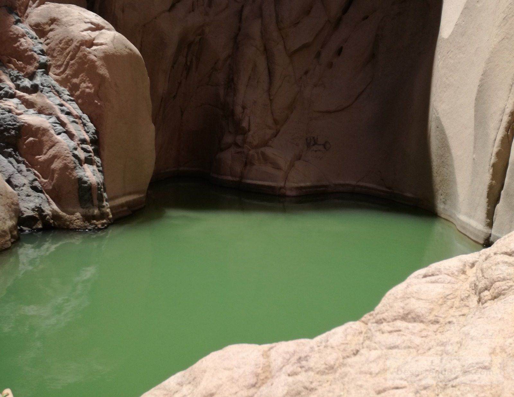
وادي الوشواشي
وادي الوشواشي وادٍ صحراوي ضيق في شبه جزيرة سيناء المصرية قرب نويبع، يشتهر ببرك المياه العذبة المخفية بين تكوينات من الحجر الرملي المنحوت.
تشكّل الوادي على مدى آلاف السنين بفعل السيول الموسمية التي شقّت الصخور الرسوبية، وينتهي بسلسلة من الأحواض الطبيعية التي تملؤها مياه الأمطار والتسرب الجوفي. يُوصل إليه بمشي تدريجي عبر الصحراء المفتوحة، ويُحدث الانتقال من السهل المكشوف إلى الوادي المغلق تحولًا واضحًا في الحجم والصوت، حيث يحل السكون والصدى محل الصمت الشاسع للمشهد المحيط.
يتطلب الوصول مشيًا مرشدًا في الصحراء لمدة 45–60 دقيقة من أقرب درب. يمكن الوصول بسيارة دفع رباعي أو بالجمل.
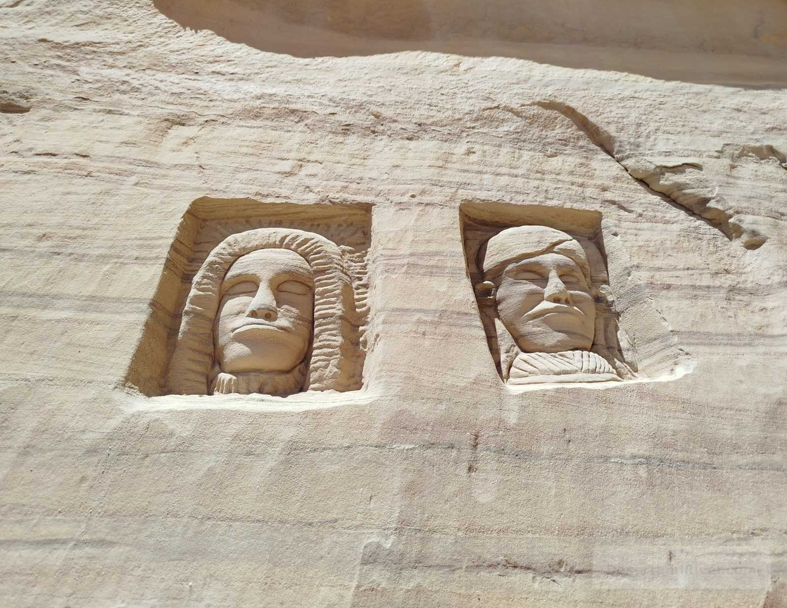
الأودية المخفية
وادٍ ضيق من الحجر الرملي قرب طابا في شرق مصر، يُعرف بالوادي المخفي، وفي جدرانه الصخرية نقوش محفوظة من العهد العثماني.
يقع الوادي في الجبال غرب طابا بشبه جزيرة سيناء، ويتكوّن من حجر رملي طبقي شكّلته الرياح والمياه الموسمية. وبين خطوطه الطبيعية نقوش عربية من العهد العثماني، تشير على الأرجح إلى حضور إداري أو مسافرين عابرين. والممر الضيق والضوء المتسلل والكتابة المتآكلة تصنع لقاءً هادئًا مع الزمن الجيولوجي والتاريخي.
نحو 30–45 دقيقة سيرًا؛ أفضل وقت للزيارة الصباح الباكر حيث الجو أبرد والضوء أنعم.

وادي الملحة
وادي الملحة وادٍ صحراوي تكسوه القشور الملحية في جنوب سيناء بمصر، يقع شرق مرتفعات سيناء، ويتميز بالرواسب المعدنية والتكوينات الصخرية ومجاري المياه الموسمية.
يعكس اسم الوادي القشور المعدنية الفاتحة التي تكونت بالتبخر في هذا المشهد الجاف الذي شكّله الرفع التكتوني والتعرية. ويمنح حوضه الواسع المفتوح وألوانه الهادئة إحساسًا قويًا بالاتساع، حيث يزيد السكون والانكشاف الوعي بالزمن الجيولوجي وبصغر الإنسان أمامه.
يمكن الوصول بسيارة دفع رباعي أو بالجمل، مع جولات مشي قصيرة على أرض غير مستوية.
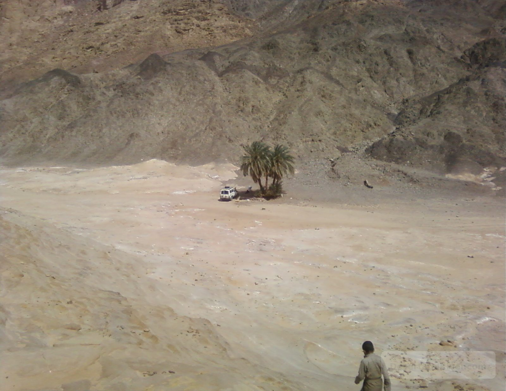
بئر البريعة
بئر البريعة بئر صحراوية نائية وموقع تخييم في شبه جزيرة سيناء المصرية، وسط مشهد من الهضاب الرملية والسهول الحصوية شكّلته الرياح والزمن.
تقع بئر البريعة في وسط سيناء، وكانت تاريخيًا مصدر ماء متواضعًا للمجتمعات البدوية والمسافرين على الطرق الداخلية لشبه الجزيرة. ويمنح المكان المحيط، الجاف والواسع وقليل السكان، إحساسًا حادًا بالمسافة والصمت، حيث يبدو الزمن الجيولوجي أكثر حضورًا من حركة البشر.
أفضل وقت للزيارة بين أكتوبر وأبريل، حين تكون حرارة النهار معتدلة والطرق أسهل.
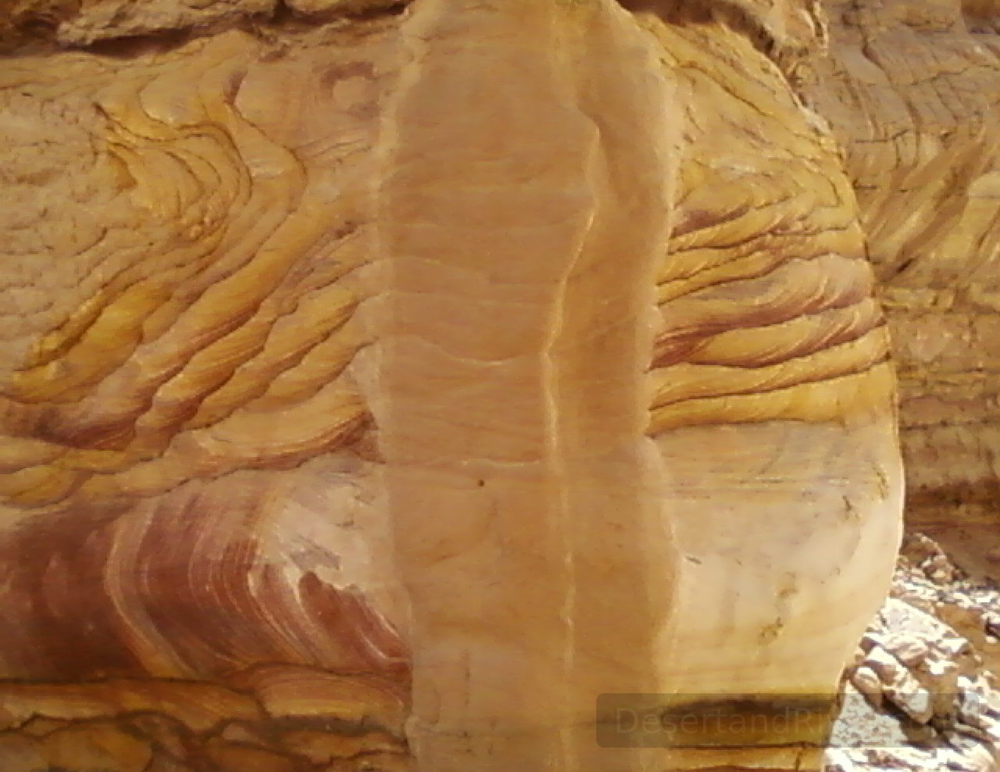
وادي قوس قزح
وادي قوس قزح ممر من الحجر الرملي في شبه جزيرة سيناء المصرية، يتميز بتكوينات صخرية مخططة طبيعيًا شكّلها الرفع التكتوني والتعرية الطويلة.
يقع الوادي في الداخل الجاف لجنوب سيناء، وتظهر على جدرانه الطبقية تلونات معدنية بدرجات هادئة من الأحمر والمغري والبنفسجي، تكشف عمليات جيولوجية امتدت ملايين السنين. وممراته الضيقة وضوؤه المتسلل يصنعان جوًا خافتًا ينتقل فيه الصوت برفق، فيزداد الوعي بالحجم وبالزمن المحفوظ في الحجر.
مسار المشي المعتاد: نحو ساعة إلى ساعتين على أرض صخرية غير مستوية.
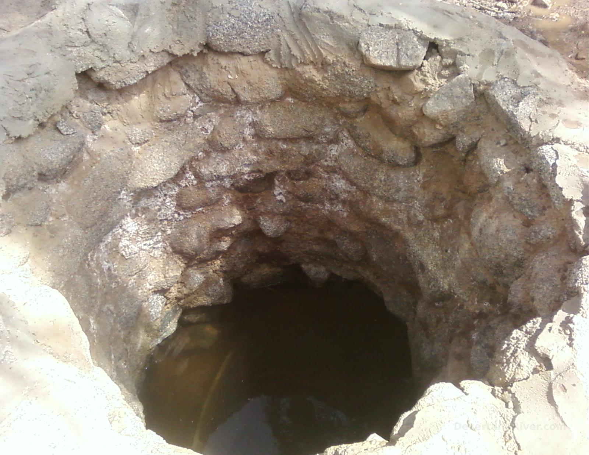
بئر الصورة
بئر الصورة بئر صحراوية نائية في وادي وتير بجنوب سيناء، مصر، كانت تاريخيًا مصدرًا للماء على طرق البدو الداخلية.
تقع بئر الصورة في السهول الحصوية الواسعة لوادي وتير، وهي جزء من شبكة آبار كانت تدعم تنقل الرعاة والاستيطان المحدود في مشهد جاف. ووجودها انقطاع هادئ في الامتداد المعدني الشاسع، حيث يدعو الصمت والانفتاح إلى التأمل في الصبر والندرة والإيقاع المتزن لحياة الصحراء.
يمكن الوصول بسيارة دفع رباعي؛ تقع على بعد نحو 60 كم شمال غرب نويبع في جنوب سيناء.
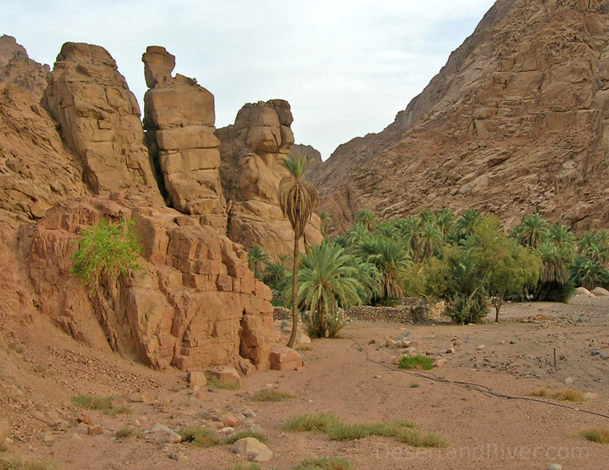
عين فرتاجة
عين فرتاجة نبع طبيعي في جنوب شبه جزيرة سيناء، مصدر نادر للمياه العذبة وسط المشهد الصحراوي الجاف لمنطقة مصر الجبلية.
ينبع الماء من منحدرات رملية وعرة، وقد أعال تاريخيًا المجتمعات البدوية المحلية والحياة البرية. ويتناقض جريانه الهادئ بشدة مع قسوة الصحراء المحيطة، فيمنح لحظة سكون وتأمل واتصال بالإيقاعات الدائمة لهذا المكان.
يمكن الوصول عبر مشي لمدة 30 دقيقة من أقرب درب صحراوي، لجولات استكشاف قصيرة
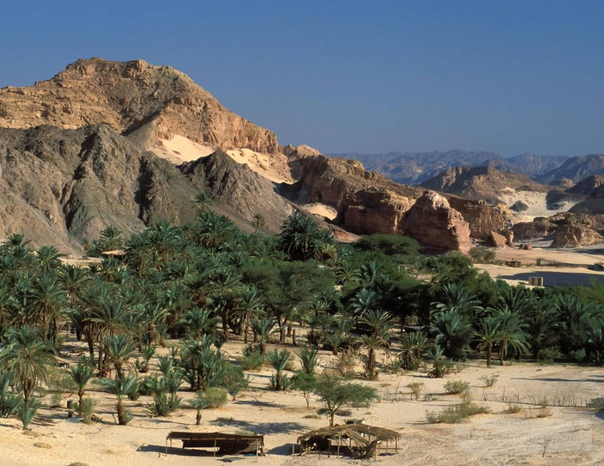
عين أم أحمد
عين أم أحمد نبع طبيعي في جنوب شبه جزيرة سيناء، مصدر نادر للمياه العذبة وسط المشهد الصحراوي الجاف للمنطقة.
أعال النبع تاريخيًا المجتمعات البدوية الرحالة والحياة البرية المحلية، مشكّلًا جيبًا صغيرًا خصبًا وسط أرض وعرة. وتعكس مياهه الساكنة الامتداد الصامت الواسع حوله، فتثير إحساسًا بعزلة خالدة واستمرارية هادئة في البيئة الصحراوية.
يمكن الوصول بسيارة دفع رباعي من أقرب درب صحراوي.
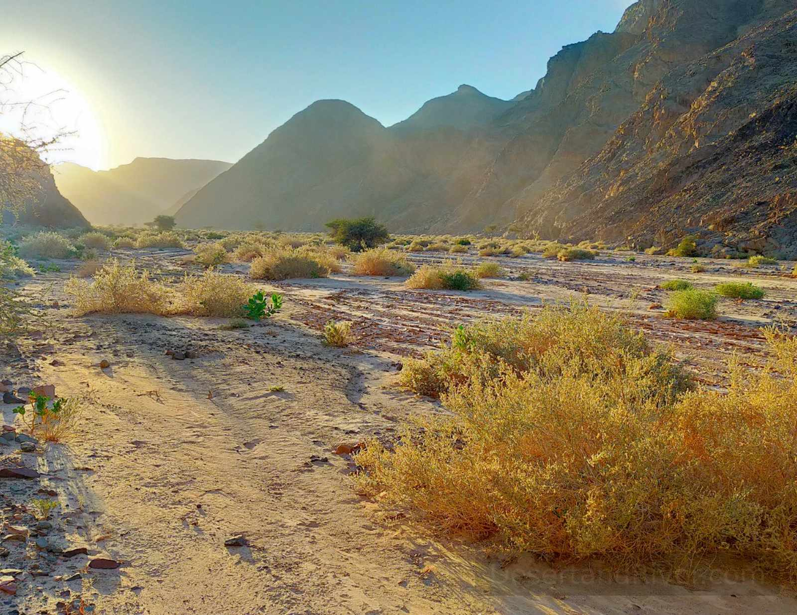
وادي الغزالة
وادي الغزالة وادٍ صحراوي في شبه جزيرة سيناء، يشتهر بأرضه الصخرية ومجاري المياه الموسمية، وتقول الرواية إنه سُمّي بالمكان الذي وجد فيه رجل من المنطقة غزالة ميتة وأنقذ صغيرها.
يعكس اسم «الغزالة» هذه الحكاية، فيحفظ صلة إنسانية هادئة بالمكان. وتثير تكويناته الصخرية الوعرة ورماله البكر إحساسًا بالسكون والخلود، حيث يمكنك أن تشعر بالتشكل البطيء للطبيعة والذاكرة عبر الأجيال.
يُعبر الوادي عادةً بالسيارة لا سيرًا، ما يتيح رحلة جميلة عبر ممراته الصحراوية الضيقة.

وادي الرم
وادي الرم وادٍ ناءٍ في جنوب سيناء يمتد عبر أرض صحراوية وعرة، تميّزه المنحدرات الصخرية ومجاري المياه الموسمية والنباتات المتناثرة.
الوادي جزء من شبكة وديان شكّلتها التعرية على مدى آلاف السنين، تكشف تكوينات صخرية طبقية وآثارًا متفرقة لسكن البدو. ويثير اتساعه إحساسًا عميقًا بالسكون، حيث يدعو حجم المكان إلى التأمل في الزمن والصبر.
مشي متوسط لمدة ساعة، يمكن الوصول إليه بسيارة دفع رباعي
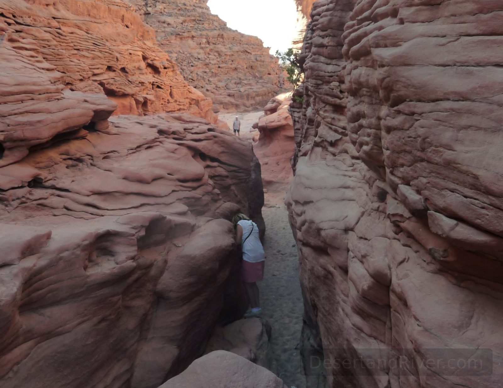
وادي سلامة (الوادي الملوّن الصغير)
وادي سلامة وادٍ واسع متعدد الألوان من الحجر الرملي في جنوب سيناء، تكوين جيولوجي مدمج شكّلته التعرية على مدى آلاف السنين.
تظهر في الوادي طبقات من الحجر الأحمر والمغري والكريمي، تكشف التاريخ الرسوبي المعقد للمنطقة وتنوعاتها المعدنية الدقيقة. وعند السير في ممراته المتعرجة يشعر المرء بانضغاط هادئ للمكان والزمان، حيث تبرز الشمس والظل الحجم الحميم للجدران الطبيعية.
نحو 30 دقيقة لعبوره؛ أفضل وقت للزيارة الصباح البارد أو آخر النهار.
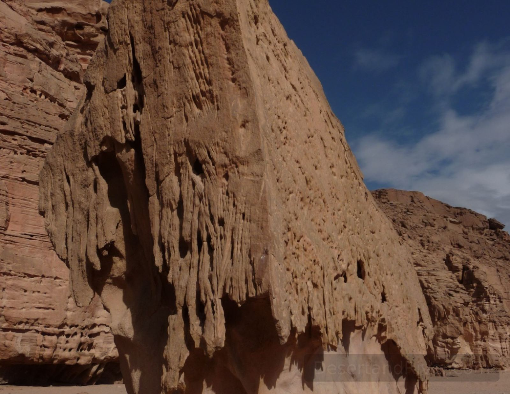
وادي ديسكو
وادي ديسكو وادٍ واسع مفتوح في جنوب سيناء، يتميز بجدار صخري شاهق وصوتيات طبيعية تصنع أصداءً لافتة عبر أرض الصحراء.
تتسع أرض الوادي للعبور والمبيت المؤقت، وتمنح إحساسًا بالاتساع غير معتاد في سيناء. ويثير جرفه الشاهق وأصداؤه الرنانة وعيًا هادئًا بالحجم وبحضور الصحراء الدائم، حيث يتفاعل الصوت والمكان عبر الزمن.
يمكن الوصول بالسيارة؛ والتخييم ممكن تحت سماء الصحراء الصافية.
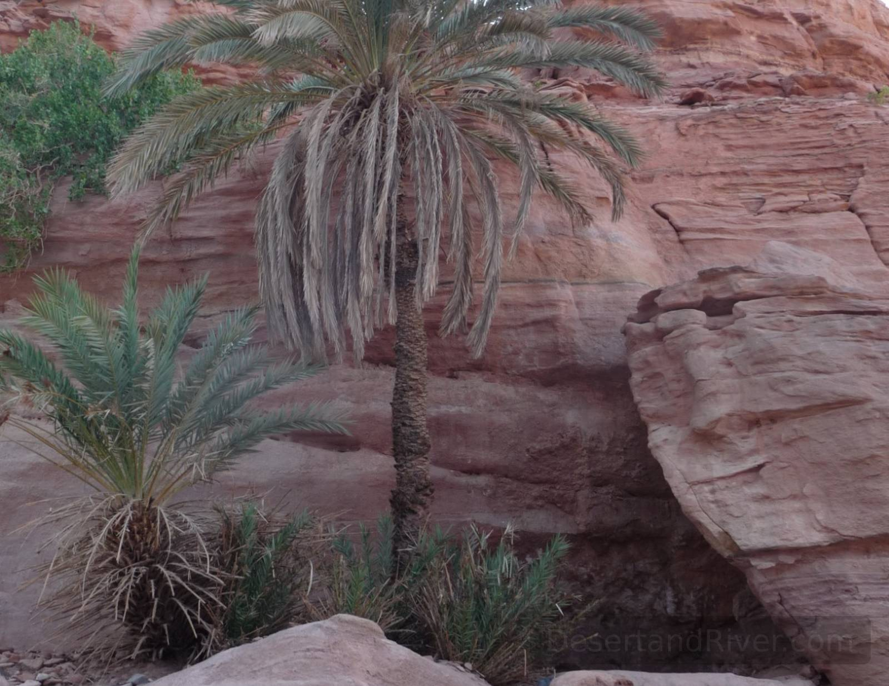
واحة ملاحيث
يجمع هذا الموقع النائي في سيناء بين وادٍ وممر صخري وواحة فيها أربع برك صغيرة للحيوانات وجبل ملاحيث، في مشهد طبيعي متنوع شكّلته المياه والرياح على مدى آلاف السنين.
يُظهر المكان تباينات جيولوجية لافتة: جدران وادٍ واسعة تنفتح على واحة فيها تكوينات صخرية، حيث توفر أربع برك صغيرة الماء للحياة البرية والنباتات مثل النخيل والسنط وشجيرات الكبر، قبل أن ترتفع الأرض إلى جبال وعرة.
يتراوح الارتفاع بين 450 و850 مترًا؛ ننصح بمسير متوسط.

نقب الحميدات
نقب الحميدات ممر جبلي ضيق في شبه جزيرة سيناء على ارتفاع نحو 650 مترًا، يربط وادي الغزالة بالوادي المغلق، وفيه نقوش من زمن الصليبيين.
يصعد الدرب عبر حواف رملية وعرة، ويوفر إطلالات واسعة على الوديان المحيطة والجبال البعيدة. وتمنح النقوش الصليبية المحفورة في الصخر صلة ملموسة بمسافري العصور الوسطى، بينما يثير الامتداد الهادئ والإطلالة المرتفعة إحساسًا تأمليًا بالحجم والعزلة.
نحو ساعة مشيًا؛ أرض متوسطة الصعوبة؛ الارتفاع نحو 650 مترًا.
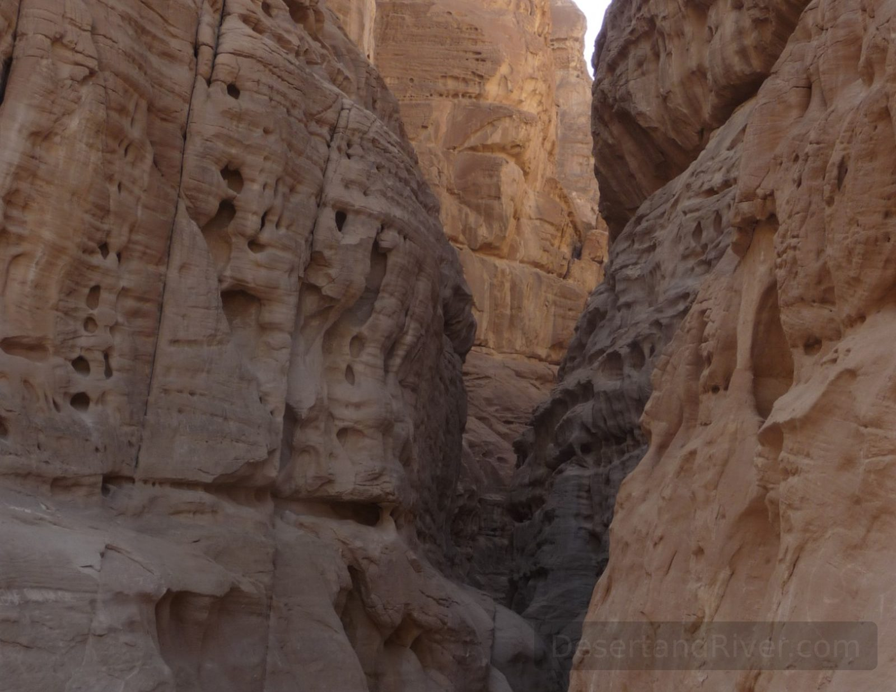
الوادي المغلق
وادٍ ضيق متعرج قرب واحة عين خضرة في شبه جزيرة سيناء، تتطلب ممراته الضيقة عبورًا حذرًا سيرًا على الأقدام.
ترتفع جدران الوادي بحدة، فتصنع تباينًا لافتًا بين الشمس والظل أثناء العبور في المساحة الضيقة. وفي بعض المواضع يضيق إلى حد يتطلب المشي جانبيًا، ما يمنح قربًا نادرًا من الصخر ووعيًا تأمليًا بالمكان.
مدة المشي: نحو 30 دقيقة في كل اتجاه؛ ممرات ضيقة جدًا.
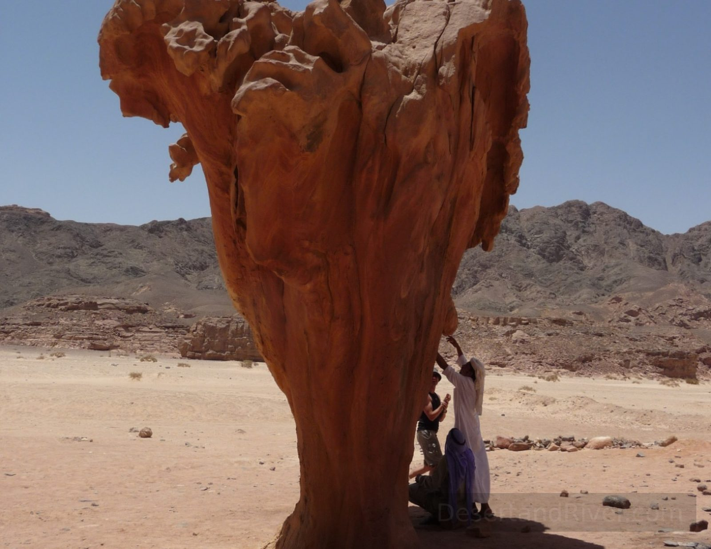
صخرة المشروم
صخرة المشروم تكوين من الحجر الرملي نحتته التعرية الطبيعية في صحراء جنوب سيناء، شكّلتها الرياح على هيئة ساق ضيقة تحمل رأسًا عريضًا يشبه القبعة.
تقع الصخرة على دروب صحراوية بين وادي الغزالة وعين خضرة، وهي نتاج تعرية ريحية طويلة للحجر الرملي الطبقي. وتوضح نسبها المميزة القوة التدريجية للرياح على الصخر الأضعف، فتصنع شكلًا يبدو متوازنًا على نحو عجيب، يدعو إلى التأمل في الزمن الجيولوجي والإصرار الهادئ للطبيعة.
يمكن الوصول بسيارة دفع رباعي مع مشي قصير على أرض صحراوية مستوية.
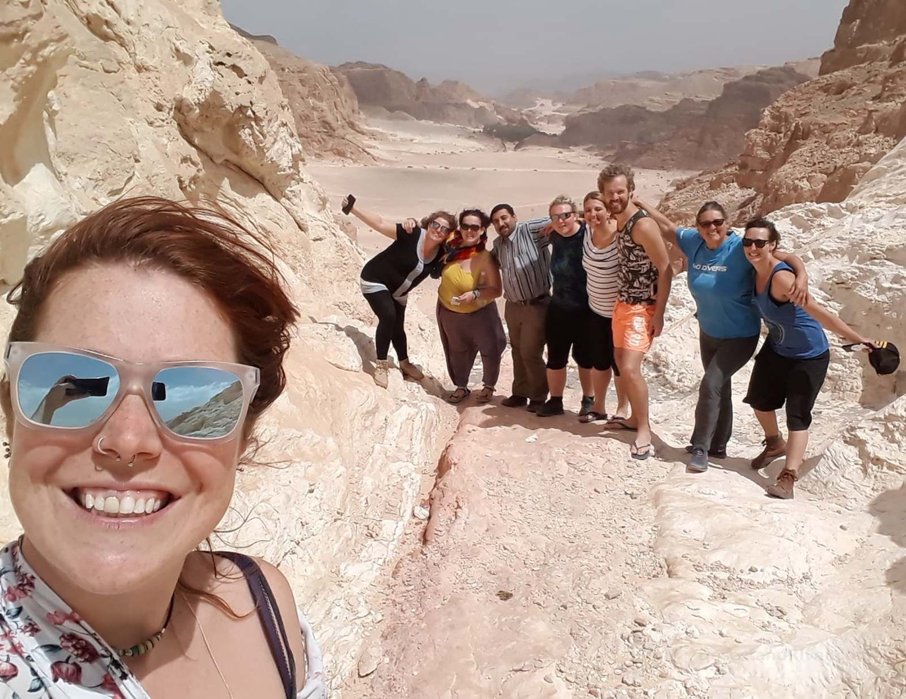
نقب خضرة
نقب خضرة وادٍ ناءٍ في جنوب سيناء يمتد على طريق نويبع–سانت كاترين، يتصل بعين خضرة ويتبع ممرًا ذا أهمية تاريخية.
يمر الطريق بصخرة النقوش التي تحمل علامات نبطية وعربية ويونانية قديمة، شاهدة على تبادل ثقافي طويل عبر شبه الجزيرة. ويثير الحجر العاري الذي بيّضته الشمس والامتدادات الهادئة إحساسًا عميقًا بعمق الزمن، كأنك تسير عبر طبقات من التاريخ البشري والجيولوجي.
يمكن الوصول مشيًا أو بالجمل عبر طريق نويبع–سانت كاترين؛ ظروف مشي متوسطة على امتداد الوادي. نحو ساعة من المشي.

واحة عين خضرة
عين خضرة واحة صحراوية صغيرة في جنوب سيناء، حيث تغذي ينابيع دائمة بقعًا من الخضرة وسط مشهد جاف ووعر.
وفّرت الواحة تاريخيًا الماء والمأوى للمجتمعات البدوية والمسافرين عبر شبه جزيرة سيناء، في تباين نادر مع الأرض القاحلة المحيطة. وتثير حفيف أشجار النخيل ولمعان البرك التي تغذيها الينابيع إحساسًا بالسكون وتوقف الزمن، وتبرز اتساع الصحراء وجمالها الهادئ.
يمكن الوصول عبر دروب وعرة
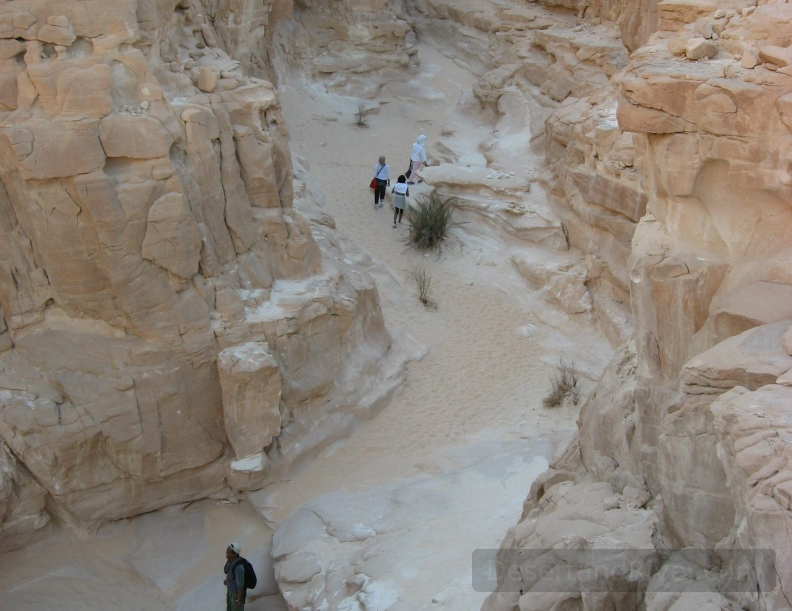
الوادي الأبيض
الوادي الأبيض ممر واسع من الحجر الرملي في شبه جزيرة سيناء، يقع بين طريق سانت كاترين–نويبع وواحة عين خضرة.
تشكّلت جدرانه الرملية الفاتحة بالتعرية على مدى آلاف السنين، وتظهر عليها طبقات وملامس دقيقة تعكس التاريخ الجيولوجي للمنطقة. وعند السير في امتداده المفتوح يشعر المرء باتساع هادئ وسكون دائم، حيث يدعو حجم المكان إلى التأمل والتناغم البطيء مع الزمن.
يمكن الوصول من الطرق القريبة، مشي متوسط لمدة ساعة، الارتفاع 950 مترًا
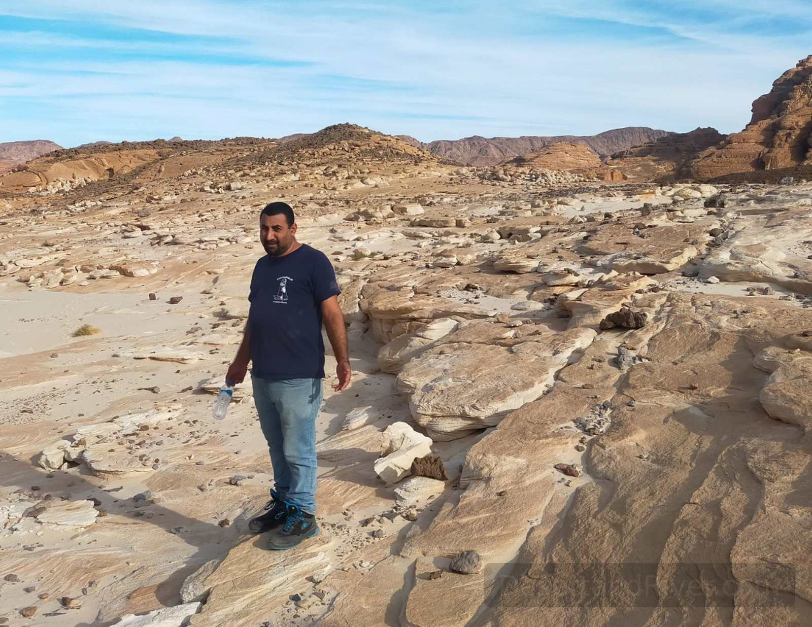
وادي المغازة والممر الصخري
ممر ضيق داخل وادي الغزالة في جنوب سيناء، فيه أماكن محمية وأشجار تين برية يسميها البدو تقليديًا «حماطة»، ومتصل من الطرفين.
يشكّل الممر طريقًا متصلًا من طريق نويبع–سانت كاترين إلى وادي المغازة، ويستغرق عبوره سيرًا نحو ساعة. هادئ ودافئ، فيه فجوات خفية وملاجئ طبيعية، بينما تخلق أشجار التين على الطريق جوًا تأمليًا يبرز اتساع الصحراء المحيطة وسكونها.
يستغرق المشي نحو ساعة؛ مناسب للمبيت في الأماكن المحمية.
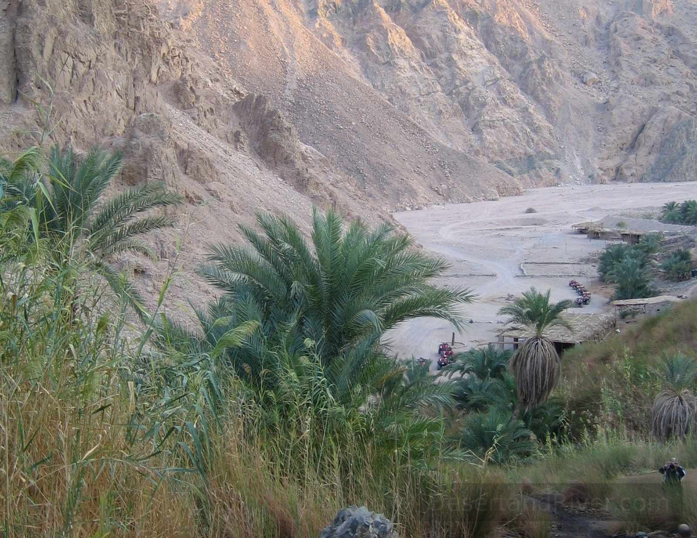
وادي قنيّ
وادي قنيّ وادٍ صحراوي في جنوب سيناء، داخل البر من دهب، يتميز بتكوينات من الحجر الرملي وبساتين السنط وتجمعات بدوية صغيرة.
يقع الوادي بين السهل الساحلي لدهب والمرتفعات الغرانيتية في الداخل، وهو جزء من شبكة أوسع من الوديان شكّلتها الأمطار الموسمية والتعرية. تسكنه عائلات بدوية منذ زمن وتزرع أجزاء منه، فيقدّم مشهدًا بمقياس إنساني واستمرارية هادئة، حيث تتباين الحقول الصغيرة برفق مع الامتداد الجاف المحيط. وهو قريب من دهب ويعطيك لمحة عن الصحراء، ومناسب جدًا لعشاء بدوي مع مبيت.
يمكن الوصول عبر طريق غير ممهد من دهب؛ مناسب للمشي القصير والتنزه الخفيف

وادي جبي
وادي جبي وادٍ صحراوي مزروع في جنوب سيناء، تتعايش فيه المزارع الصغيرة والنقوش القديمة والآثار في مشهد واسع من الحجر الرملي شكّلته المياه الموسمية.
تصطف بعض المزارع العائلية على أجزاء من الوادي، تزرع الخضروات والفواكه والمانجو والزيتون بالاعتماد على المياه الجوفية والري التقليدي. وفي وسط الوادي نقوش يعود عمرها إلى نحو 2000 عام محفورة في الصخر، وعلى تل مجاور أدوات حجرية متناثرة وحفريات ظاهرة، ما يضع الزراعة الحالية بهدوء ضمن سلسلة أطول بكثير من الزمن البشري والجيولوجي.
يمكن الوصول بسيارة دفع رباعي؛ خصص ساعة إلى ساعتين للمشي بين المزارع والنقوش والتل الأثري.

النواميس
النواميس مبانٍ حجرية دائرية من عصور ما قبل التاريخ في صحراء جنوب سيناء المرتفعة، تعود إلى العصر البرونزي المبكر وترتبط بمجتمعات الرعي الأولى.
تنتشر هذه الغرف المنخفضة المبنية بالحجارة الجافة على هضاب نائية بين جبال الداخل وخليج العقبة، وهي من أقدم المباني المسقوفة في مصر، بُنيت نحو الألفية الرابعة قبل الميلاد. وتتجه أبوابها الصغيرة عادةً نحو الغرب، ما يشير إلى دلالة طقسية أو جنائزية؛ والوقوف بينها يجعل المرء يعي بحدة السكون الشاسع وعمق الزمن البشري في المشهد الصحراوي.
أفضل وصول بسيارة دفع رباعي؛ تُبلغ المواقع عادةً عبر دروب صحراوية وعرة من وسط جنوب سيناء.
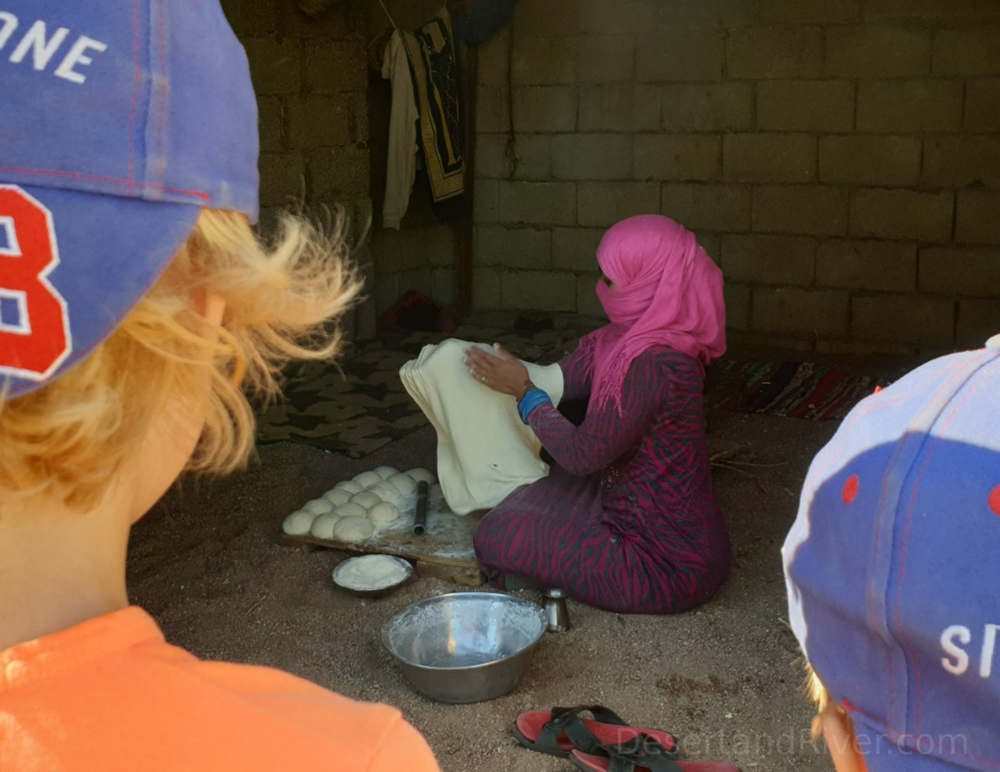
قرية النواميس
قرية النواميس في شبه جزيرة سيناء مستوطنة صغيرة قرب مقابر حجرية دائرية قديمة، تشتهر بتدريب الجمال ونمط الحياة البدوي التقليدي.
تجمع القرية بين أماكن السكن والماعز والدجاج والحمام والبط، في ترابط وثيق بين الناس والحيوانات والأطفال في بيئة مفتوحة بلا أسوار. ويجري هذا الإيقاع اليومي بجوار المقابر الحجرية الصامتة من العصر البرونزي المبكر، فيخلق إحساسًا هادئًا بالاستمرارية بين الماضي والحاضر. ويضيف وجود الجمال المدربة على السباق تباينًا حيويًا خفيفًا مع سكون السهل الصحراوي المحيط.
المشي في القرية وبين المقابر سهل على أرض صحراوية مستوية.
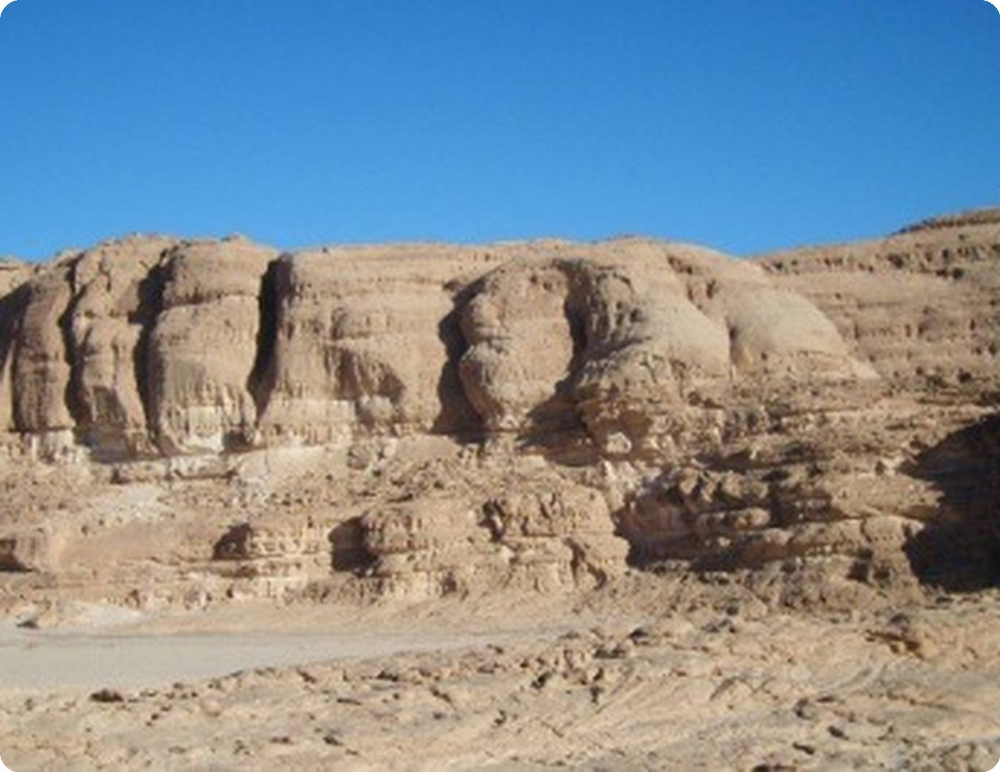
جبل المطامير
جبل المطامير تكوين جبلي شكّلته الرياح في وسط سيناء، حيث ترتفع صخور تغطيها الرمال من الهضبة الصحراوية، وتعكس ملامحها المخفية معنى «المطامير».
تدفن الرمال جزئيًا الصخور الكبيرة في هذه الكتلة الجبلية، وقد شكّلتها رياح الصحراء المستمرة مع الوقت، فصنعت مشهدًا من الأشكال الخفية والملامس الدقيقة. ويثير هذا التفاعل الهادئ بين الحجر والرمل إحساسًا بالخفاء والسكون، في لقاء تأملي مع تحولات الصحراء البطيئة الدائمة.
زمن المشي التقريبي عبر الحافة الرئيسية: ساعتان إلى ثلاث.
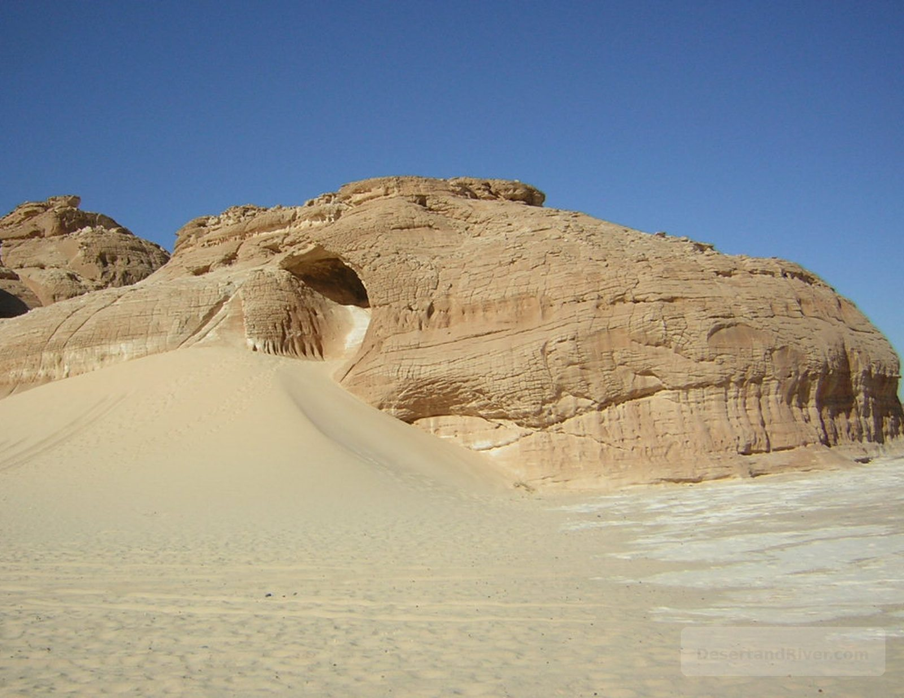
جبل مخروم (جبل رأس التنين)
جبل مخروم، أو جبل رأس التنين، قمة من الحجر الرملي في جنوب سيناء، شكّلتها الرياح والرمال لتشبه رأس ديناصور بتجويف «عين» مفرغ.
نحتت التعرية الريحية ثقبًا مميزًا يذكّر بعين ديناصور، بينما توحي الحواف المحيطة بأسنان وخطوط فكين. ويبرز هذا النحت الطبيعي الحجم الوعر للمكان، ويمنح إحساسًا تأمليًا بصبر الزمن وهو يشكّل صحراء سيناء.
الارتفاع نحو 820 مترًا؛ مشي متوسط
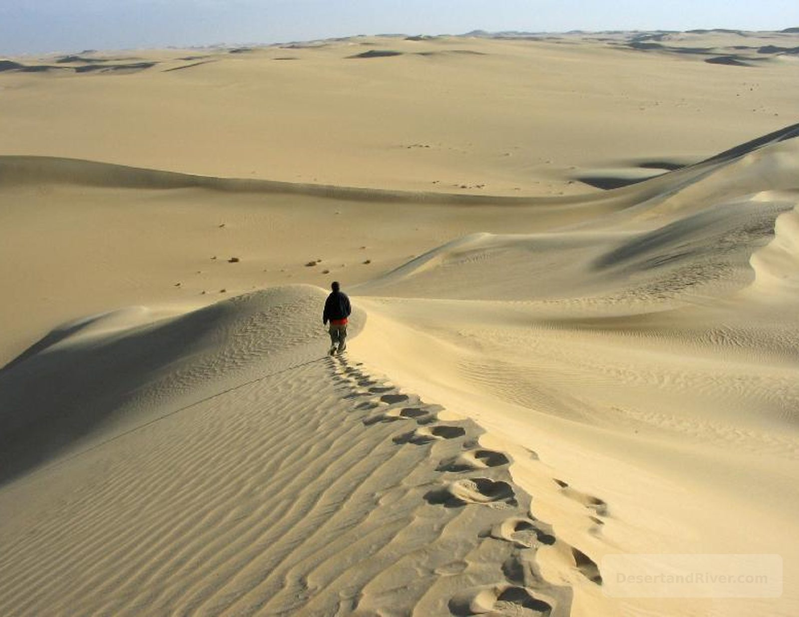
كثيب حضيضة الرملي
كثيب حضيضة تكوين صحراوي واسع في جنوب سيناء، تميّزه رمال متموجة بلطف شكّلتها الرياح والأنماط المناخية الموسمية.
يقع الكثيب في المشاهد الجافة التي تربط جبال سيناء بالسهول الصحراوية المنخفضة، ويمنح إحساسًا هادئًا يكاد يكون تأمليًا بالانفتاح. وتعكس ملامحه الملساء المتحركة مرور الزمن البطيء، حيث تختفي آثار الأقدام سريعًا ويمتد الأفق دون انقطاع.
المشي على الكثيب قصير، وهو مكان رائع للتزلج على الرمال.
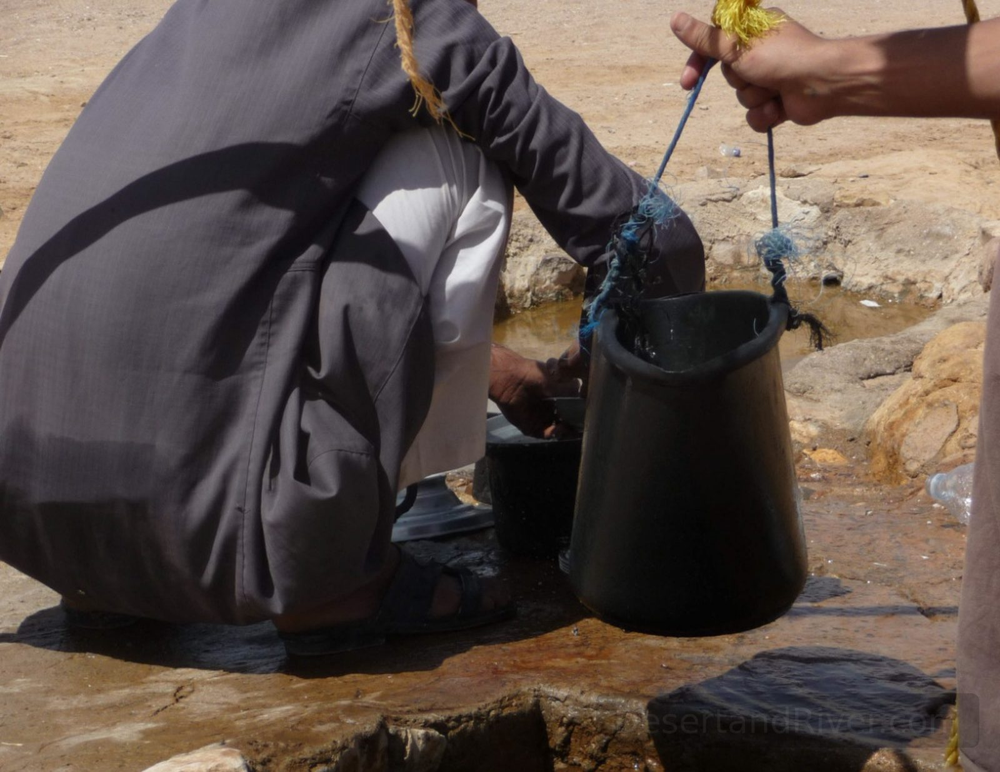
بئر صفرا
بئر صفرا بئر صحراوية في جنوب سيناء، حُفرت عام 1986 لتوفير مياه الشرب لحيوانات مستوطنة بدوية هُجرت الآن.
تقع البئر وسط سهول رملية واسعة، وكانت توفر ماءً موثوقًا للماشية والسكان، رغم أن المستوطنة لم تعد موجودة. ويعكس ماؤها الصافي سماء الصحراء الواسعة، فيثير إحساسًا هادئًا بالصمود وبآثار الوجود البشري الخفيفة في مشهد خالد.
يمكن الوصول بسيارة دفع رباعي
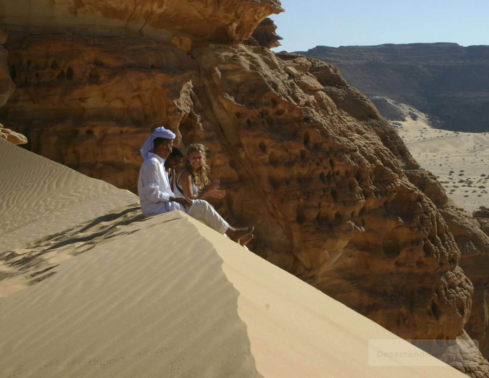
كثيب صفرا الرملي
كثيب صفرا تكوين صحراوي بارز في جنوب سيناء، سُمّي برماله الصفراء المميزة، أمام خلفية جبلية جافة.
الكثيب جزء من المشهد الصحراوي الواسع في سيناء، شكّلته الرياح وتغيرات الحرارة الموسمية على مدى آلاف السنين. ومنحدراته الذهبية الملساء، المثالية للتزلج على الرمال، تمنح إحساسًا هادئًا بتوقف الزمن، وتدعو إلى التأمل في الأفق الواسع المتحرك.
يستغرق الصعود إلى القمة نحو 15 دقيقة، وقد يصبح صعبًا قرب القمة بسبب الرمال الناعمة العميقة.

قرية عرادة
قرية عرادة مستوطنة صغيرة على الطريق في جنوب سيناء، بين نويبع وطريق سانت كاترين، حيث تستمر الحياة البدوية التقليدية إلى جانب الحرف اليدوية.
تتكون القرية من مساكن بسيطة يمارس سكانها النسيج والغزل وحرفًا يدوية أخرى، محافظين على تقاليدهم عبر الأجيال. والزمن هنا يمضي ببطء، يحدده إيقاع العمل اليومي والمشهد الصحراوي العاري، فيمنح إحساسًا هادئًا بالاستمرارية والحضور.
يمكن الوصول بالطريق؛ والمشي في القرية يستغرق نحو 20–30 دقيقة.

وادي عرادة
وادي عرادة وادٍ صحراوي ناءٍ في جنوب سيناء، يشتهر بتكويناته الوعرة من الحجر الرملي والنقوش الصخرية القديمة على منحدراته.
في الوادي نقوش صخرية كثيرة تصوّر جوانب من الحياة اليومية، تذكّر بمشاهد في معابد سيناء، منها نقش لافت لقط بري، غالبًا نمر أو أسد، يُعتقد أن عمره 8000 عام حين كانت المنطقة تشبه السافانا. ويبرز ضوء الشمس على النقوش صمودها، ويدعو إلى التأمل في حياة من عبروا هذا المشهد الهادئ. مليء بالصخور الملونة والنقوش.
يمكن الوصول بمشي لمدة ساعة من طريق سانت كاترين–نويبع. مشي سهل.
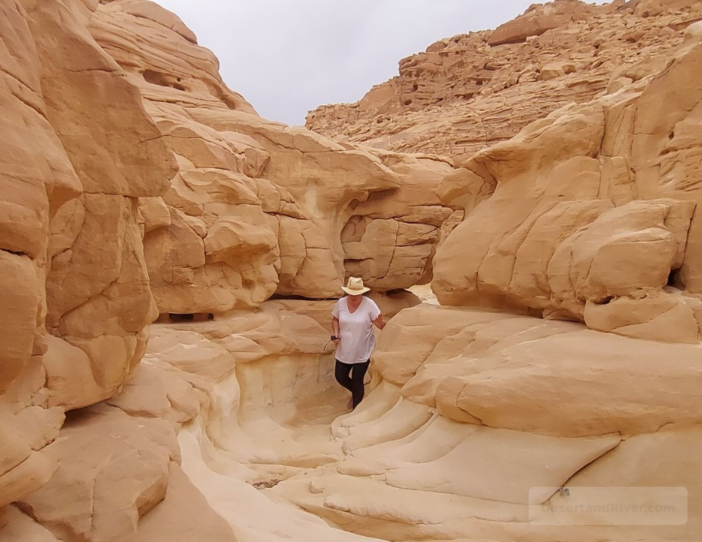
وادي عرادة (الوادي المزدوج)
وادي عرادة، أو الوادي المزدوج، تكوين من الحجر الرملي في جنوب سيناء، فيه ممران متصلان شكّلتهما التعرية، وهضبة تظهر فيها حفريات بحرية قديمة.
اكتسب الوادي اسمه من المسارين: يصعد المتسلقون أحد الممرين وينزلون من الآخر عند الطرف، متتبعين ملامح حجر تذكّر بوادي أنتيلوب الأمريكي. وعلى الهضبة تستحضر المرجانيات والكائنات البحرية المتحجرة قاع البحر القديم للمنطقة، بينما يمنح الممر الضيق إحساسًا هادئًا بالحجم وعمق الزمن.
عبور الوادي المزدوج كاملًا، بما في ذلك الصعود والنزول، يستغرق نحو ساعة إلى ساعة ونصف.
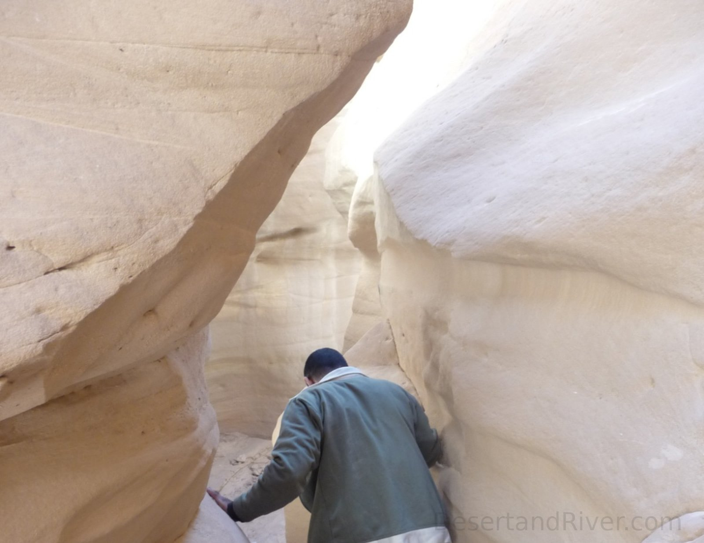
وادي الحمام
وادي الحمام وادٍ واسع منخفض من الحجر الرملي في جنوب سيناء، يسكن الحمام البري في ملاجئه الصخرية الطبيعية على أرضه ومنحدراته.
يمتد الوادي بلطف عبر أرض جافة، ويوفر موطنًا لحمام يعيش طبيعيًا بين صخوره لا يربيه الإنسان. ويتحرك ضوء الشمس ببطء على جدرانه العريضة الضحلة، مبرزًا ملامس وأنماطًا تمنح إحساسًا خفيفًا بالهدوء والتأمل.
نحو ساعة مشيًا؛ صعوبة سهلة.
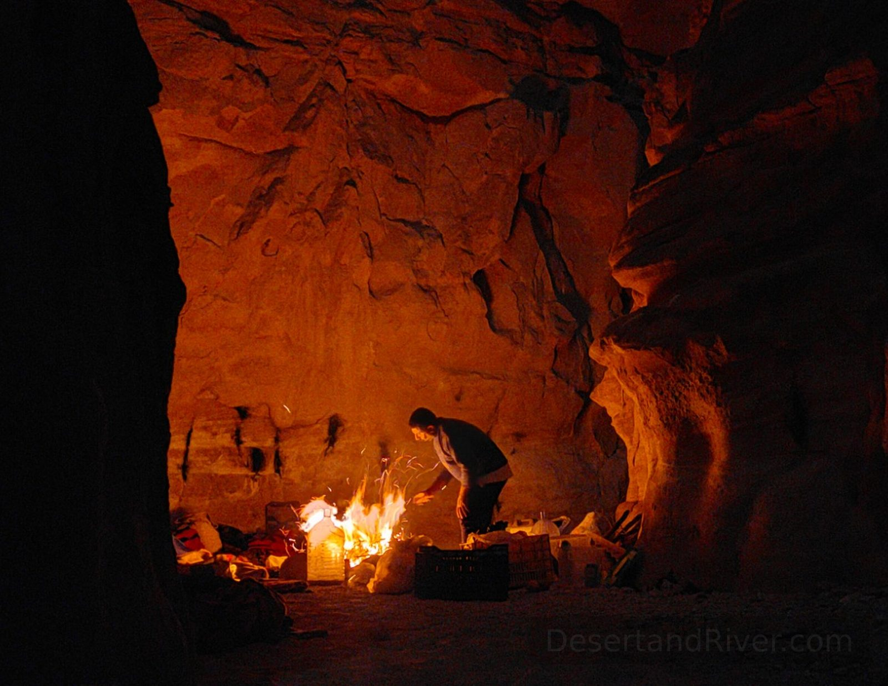
وادي الزجزاج
وادي الزجزاج ممر من الحجر الرملي في جنوب سيناء، سُمّي بمنعطفاته الحادة، ويقع قرب طريق سانت كاترين–نويبع ويشكّل ممرًا جيولوجيًا مدمجًا.
يعكس مساره المتعرج المميز آلاف السنين من التشكل بالتعرية، صانعًا مساحات حميمة بين جدرانه الرملية الطبقية. ومن الجميل جدًا قضاء ليلة هنا في ضوء الشموع الناعم، بإحساس هادئ تأملي بالاحتواء والسكون.
يستغرق المشي ذهابًا وإيابًا نحو 30 دقيقة؛ صعوبة متوسطة
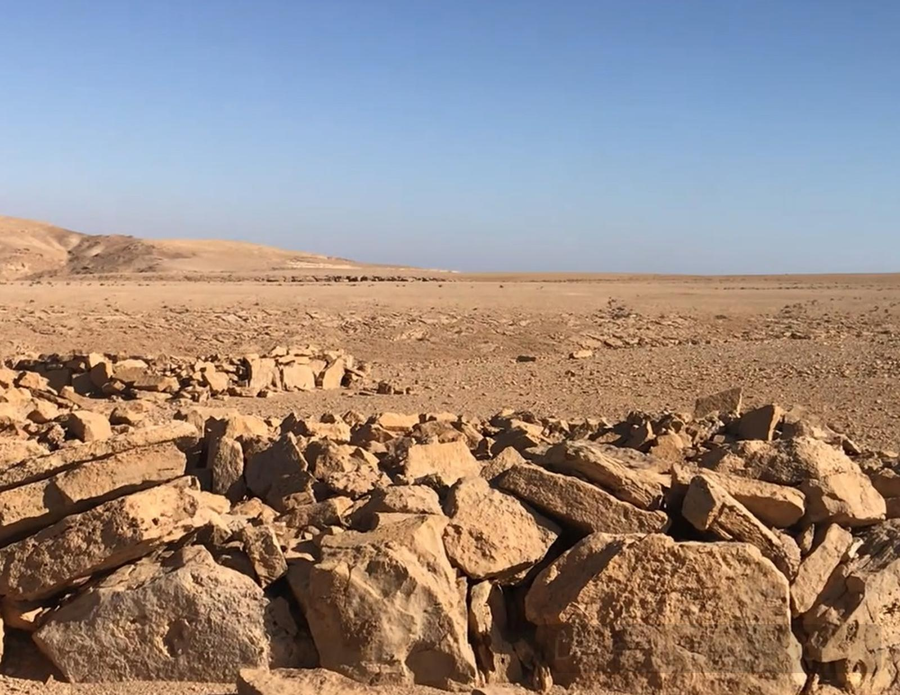
جبل قنّة
جبل قنّة جبل من الحجر الرملي في وسط سيناء، يشتهر بالجيود والمداخن الحجرية والفتحات الحرارية الأرضية على قمته.
على القمة فتحات حرارية أرضية لا توجد عادةً إلا تحت البحر، في إشارة إلى الأصل البحري القديم للجبل. وتحدد مداخن حجرية هذه الفتحات، بينما تلتقط الجيود المتناثرة ضوء الصحراء، فيتولد إحساس هادئ تأملي بالزمن وبتحول الأرض الجيولوجي البطيء.
نحو ساعة مشيًا من طريق سانت كاترين–نويبع، صعوبة متوسطة.

دير سانت كاترين
دير سانت كاترين، عند سفح جبل موسى في جنوب مصر، أقدم دير مسيحي عامل في العالم، تستمر فيه الحياة الرهبانية منذ القرن السادس.
تأسس الدير برعاية بيزنطية، ويضم مخطوطات وأيقونات وذخائر قديمة تعكس قرونًا من الممارسة الدينية المتواصلة. وتحيط به جبال وعرة، وتثير ساحاته الهادئة ومبانيه الحجرية البسيطة سكونًا تأمليًا يتباين مع المشهد الصحراوي القاسي خارجه.
على ارتفاع 1580 مترًا فوق سطح البحر؛ يمكن الوصول إليه طوال العام عبر مسارات مشي متوسطة.
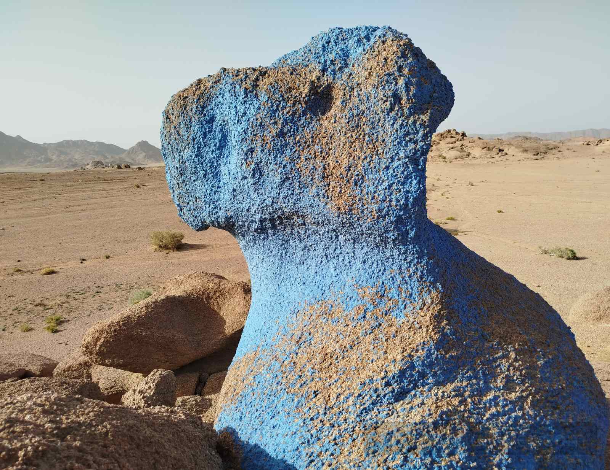
الصحراء الزرقاء
الصحراء الزرقاء منطقة نائية في جنوب سيناء، تشتهر بتلال من الحجر الرملي الفاتح عليها مسحة زرقاء من الرواسب المعدنية، وتكوينات صخرية مطلية هنا وهناك.
في عام 1979 طلى الفنان البلجيكي جان فيرام عدة واجهات صخرية هنا بالأزرق الزاهي رمزًا للسلام، مضيفًا طبقة إنسانية إلى ملامح الصحراء الطبيعية. ويثير المشهد الهادئ الخافت، بلمساته الزرقاء، السكون والتأمل، في تباين هادئ مع الجبال والوديان المحيطة.
يمكن الوصول بسيارة دفع رباعي
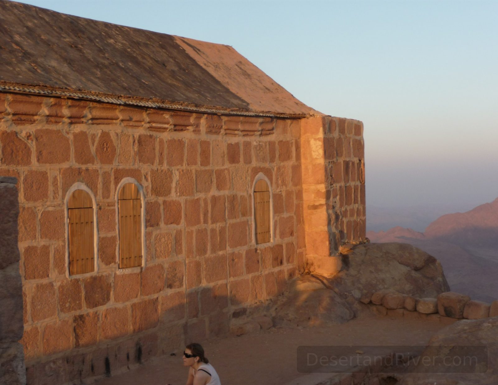
جبل موسى
جبل موسى قمة غرانيتية بارزة في جنوب شبه جزيرة سيناء، ذات أهمية تاريخية ودينية بوصفه موضع الوحي في الكتب المقدسة.
يرتفع جبل موسى إلى 2285 مترًا، وهو جزء من المشهد الصحراوي الوعر الممتد بين سانت كاترين والبحر الأحمر. وتثير منحدراته العارية وقمته الهادئة إحساسًا عميقًا بالعزلة وعمق الزمن، وتصل الزائرين بعظمة الطبيعة والتاريخ معًا.
الارتفاع: 2285 مترًا؛ يستغرق الصعود عادةً ساعتين إلى ثلاث من المسارات عند السفح.

فرش إيليا
هضبة نائية في سيناء، تقع تقريبًا في منتصف الطريق بين دير سانت كاترين وقمة جبل موسى، تميّزها أرض وعرة ونباتات متناثرة.
تقدم فرش إيليا مشهدًا صخريًا مرتفعًا شكّلته التعرية على مدى آلاف السنين، مع إطلالات بانورامية على الوديان المحيطة والجبال البعيدة. وتمنح الهضبة إحساسًا هادئًا بالعزلة، حيث يبرز سكون الصحراء حجم الأرض وثباتها، في استراحة تأملية بين الدير في الأسفل والقمة في الأعلى.
يمكن الوصول بمشي متوسط لمدة ساعة ونصف إلى ساعتين من الدير باتجاه جبل موسى.
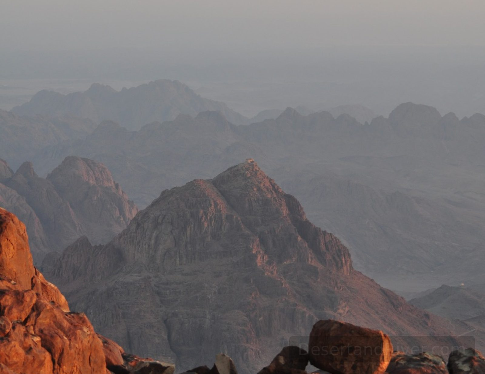
جبل كاترين
جبل كاترين أعلى قمة في شبه جزيرة سيناء، يقع قرب سانت كاترين، كتلة بارزة من الغرانيت والحجر الرملي في مشهد صحراوي وعر.
للجبل أهمية تاريخية لقربه من دير سانت كاترين وارتباطه بالحج الديني، ويرتفع بحدة فوق السهول المحيطة، فيصنع تباينًا بصريًا قويًا. وتمنح امتداداته الهادئة وإطلالاته الواسعة إحساسًا عميقًا بالسكون والحجم، وتدعو إلى التأمل في المكان والزمن.
الارتفاع: 2634 مترًا؛ صعود صعب يستغرق عادةً ساعتين إلى ثلاث من سانت كاترين.
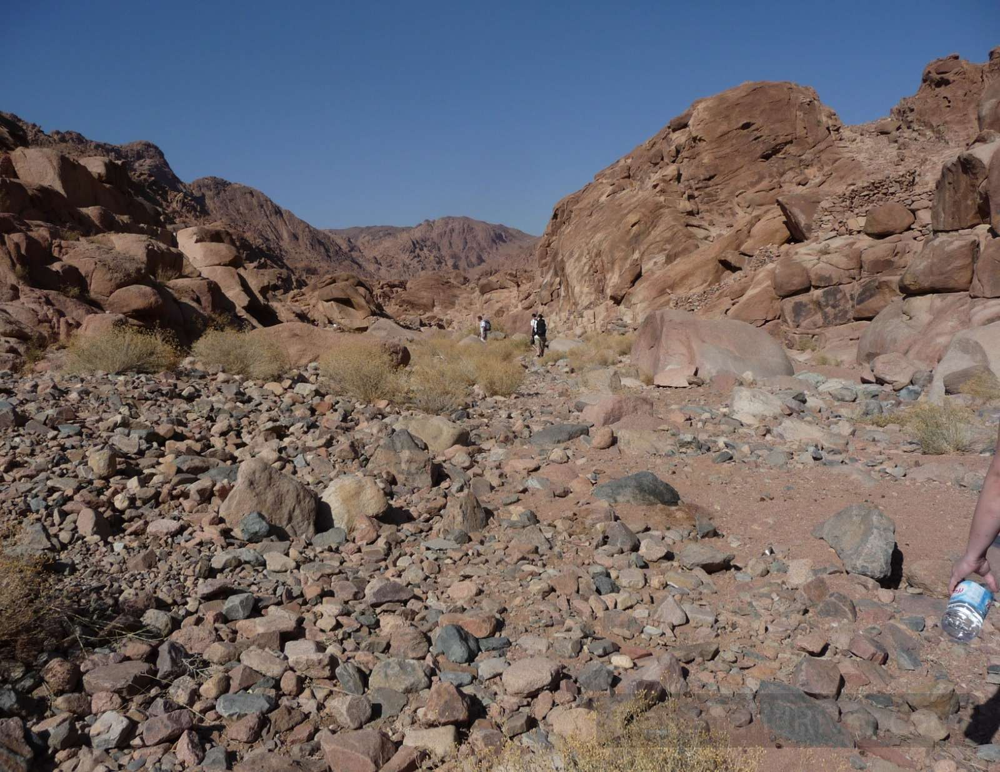
وادي الأربعين
وادي الأربعين وادٍ جاف واسع في جنوب سيناء، يربط جبل كاترين بالدير القريب، ويوجّه مياه السيول الموسمية عبر الحواف الرملية المحيطة.
يشكّل الوادي مسار مشي لمدة ساعة بين الجبل والدير، وأرضه مغطاة بحصى متناثر ونباتات صحراوية قليلة. وعند السير فيه يمنح حجم الحواف المحيطة إحساسًا هادئًا بالسكون ومرور الزمن الجيولوجي البطيء، ويدعو إلى التأمل وسط المشهد الوعر.
ساعة مشيًا؛ أرض متوسطة تناسب معظم المتنزهين.

الشيخ محسن
الشيخ محسن نتوء صحراوي متواضع في جنوب سيناء، يشتهر بترتيبات حجرية من العصر الحجري ونباتات متناثرة وقربه من السهول الرملية المحيطة.
في الموقع حجارة رتّبها سكان قدماء، دليل ملموس على نشاط بشري يعود إلى العصر الحجري. وتثير امتداداته الهادئة من الصخر المغري والأرض التي لفحتها الشمس إحساسًا بسكون خالد، وتصل الزائرين بلطف بعمق التاريخ وصرامة الصحراء.
يمكن الوصول عبر دروب صحراوية غير ممهدة
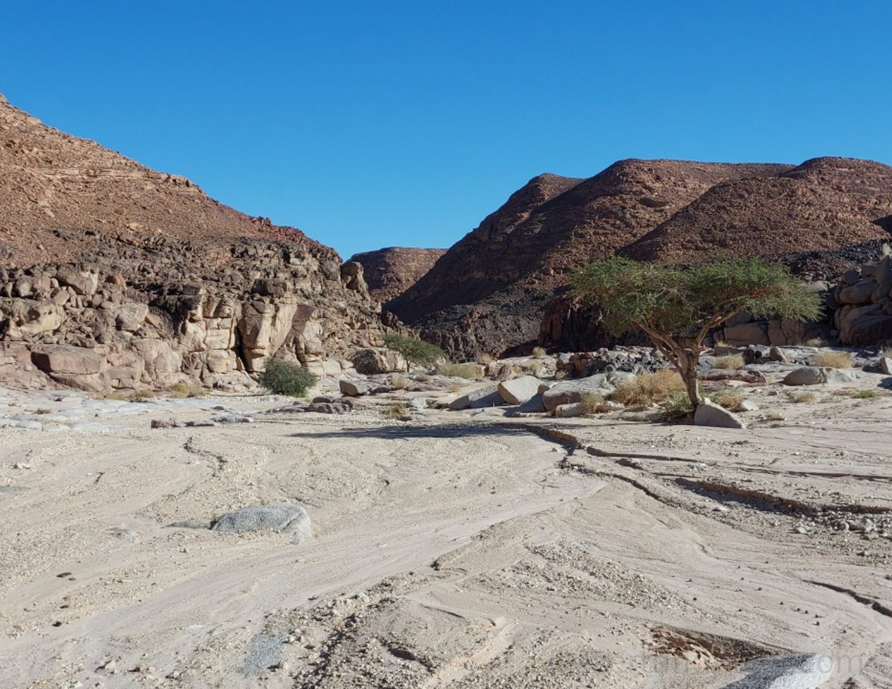
وادي الزرانق
وادي الزرانق وادٍ جاف في وسط سيناء، يشكّل ممرًا طبيعيًا من الحجر الرملي والأرض الصحراوية، ويُستخدم تقليديًا طريقًا بدويًا يربط بين التجمعات.
يمتد الوادي عبر جبال وسهول وعرة، ويمنح اتساعه إحساسًا هادئًا دائمًا بحجم الصحراء وتاريخها. وكثيرًا ما يعبره المسافرون بالسيارة، متتبعين طريقًا استُخدم طويلًا للتنقل والتجارة المحلية.
القيادة عبر وادي الزرانق تستغرق نحو ساعتين إلى ثلاث.

كهف الزرانق
كهف الزرانق تكوين من الحجر الجيري في صحراء جنوب سيناء قرب وادي الزرانق، يشتهر برسومه الجدارية الملونة القديمة التي يعود عمرها إلى نحو 12000 عام.
يحفظ داخل الكهف فنًا حيًا من عصور ما قبل التاريخ، يقدم لمحة نادرة عن التعبير البشري المبكر في المنطقة. وعند دخول المكان البارد المظلل يعيش الزائر تباينًا لافتًا مع الصحراء المشمسة في الخارج، فيتولد إحساس باستمرارية زمنية عميقة وتأمل هادئ في آلاف السنين من الوجود البشري.
يمكن الوصول بمشي قصير لمدة 20 دقيقة من الدرب الصحراوي الرئيسي.

مشهد الحرب النبطي
مشهد الحرب النبطي نقش صخري بارز قديم في جنوب سيناء، يصوّر صورًا حربية نبطية محفورة في منحدرات الحجر الرملي على طرق التجارة التاريخية.
يعود النقش على الأرجح إلى أوائل الألفية الأولى الميلادية، ويصوّر محاربين مسلحين وجمالًا في تشكيل حيوي، عاكسًا الحضور العسكري والثقافي للأنباط في المنطقة. وتمنح سطحه المتآكل وموقعه النائي إحساسًا هادئًا بالصمود ومرور الزمن، وتدعو إلى التأمل في سعي الإنسان أمام المشهد الصحراوي الواسع.
يمكن الوصول بسيارة دفع رباعي
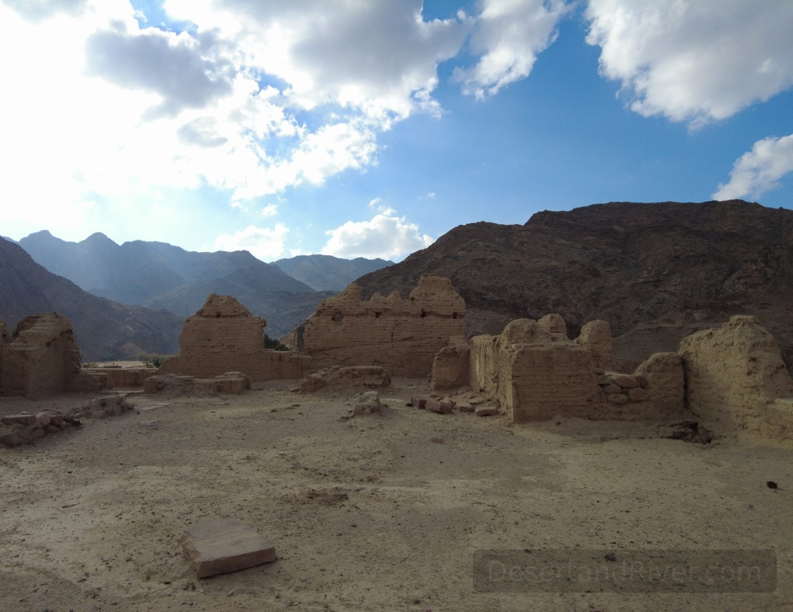
وادي فيران
وادي فيران أكبر وديان جنوب سيناء وأخصبها، وادٍ صحراوي واسع فيه بساتين نخيل وتجمعات سكنية شمال غرب سانت كاترين.
ارتبط الوادي طويلًا بالرهبنة المسيحية المبكرة، ويُربط أحيانًا برفيديم المذكورة في الكتاب المقدس، ويحفظ آثار كنائس بيزنطية ومساكن نسّاك بين الحدائق المزروعة. وتحيط به جبال غرانيتية، وتقطع خضرته غير المتوقعة جفاف ما حوله، فتصنع إحساسًا هادئًا بالاستمرارية بين السكن القديم وإيقاع الحياة البدوية الحالي.
يقع على بعد نحو 130 كم شمال غرب شرم الشيخ؛ يمكن الوصول إليه طوال العام عبر طريق ممهد.
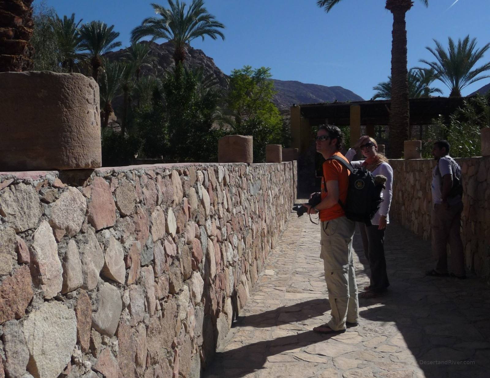
دير الراهبات السبع
دير الراهبات السبع في جنوب سيناء قرب جبل موسى موقع ديني تاريخي صغير مرتبط بالحضور الرهباني المسيحي المبكر في صحراء سيناء.
يرتبط الدير تقليديًا بالتعبد القبطي المسيحي، ويعكس التراث الزهدي الذي تطور حول جبل موسى منذ أواخر العصور القديمة. وفي مشهد جبلي جاف، تثير مبانيه الحجرية المتواضعة ومحيطه الهادئ السكون الذي سعى إليه الرهبان الأوائل، فيشعر الزائر بعزلة صاغها ضوء الصحراء والرياح والزمن.
يمكن الوصول عبر درب صحراوي وعر؛ الظروف متغيرة
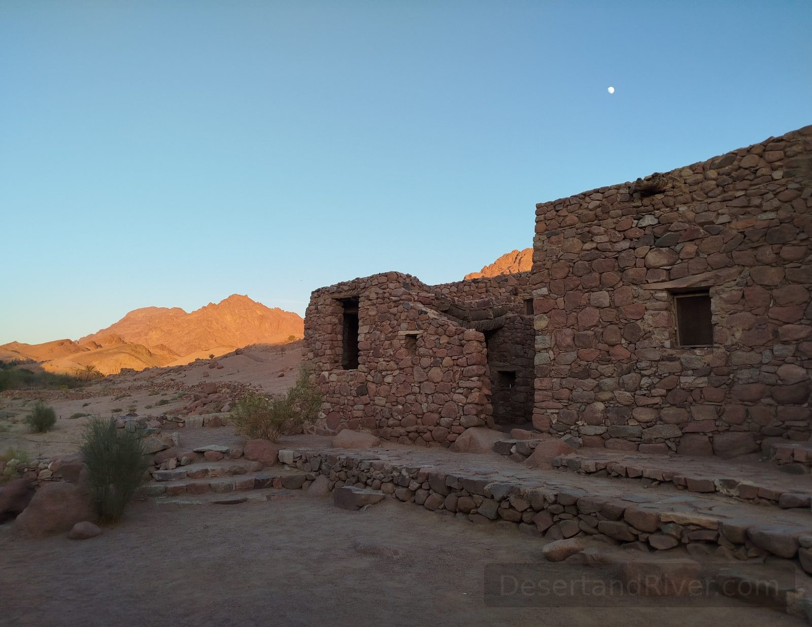
نُزل الكرم البيئي
نُزل الكرم البيئي نُزل صحراوي صغير مبني بشكل مستدام في جنوب سيناء، يدمج المواد المحلية وأساليب البناء التقليدية في مشهد بدوي جبلي.
بُني النُزل بمواد محلية قابلة للتحلل وتقنيات بناء إقليمية، فيعكس ممارسات صحراوية قديمة متكيّفة مع الاهتمامات البيئية المعاصرة. وتلطّف جدرانه الطينية وساحاته المفتوحة الحرارة وتؤطر آفاقًا جبلية واسعة، حيث يزيد الصمت والضوء المتبدل الوعي بالحجم والزمن والبساطة الأساسية.
يقع في جنوب سيناء، على بعد ساعة إلى ساعتين بالسيارة من دهب حسب ظروف الطريق الصحراوي.
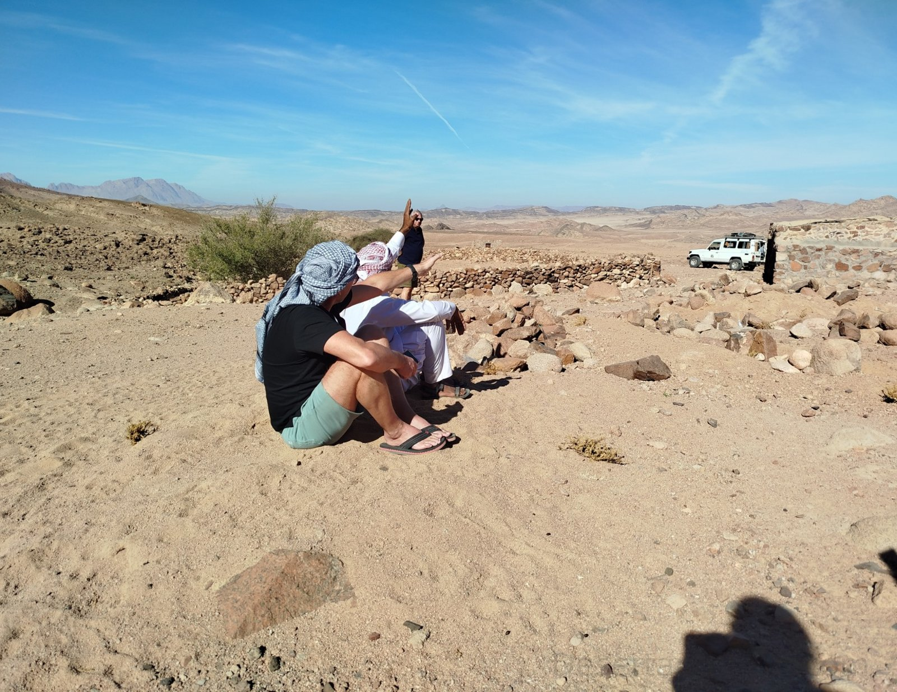
الشيخ عوض
الشيخ عوض موقع صحراوي قديم في جنوب سيناء، يشتهر ببقايا من العصر الحجري وموقعه في المشهد الجبلي المرتفع بين وديان الداخل والسهول الساحلية.
تشمل الآثار في المنطقة مبانيَ حجرية وأدوات حجرية تُنسب إلى استيطان بشري مبكر، تشير إلى سكن يعود إلى العصر الحجري. وتثير التكوينات المتناثرة من الحجر المشغول أمام الأرض الغرانيتية العارية استمرارية هادئة للوجود البشري، حيث يقزّم الزمن الجيولوجي حياة الأفراد ويحفظ أثرها في الوقت نفسه.
يقع في الداخل الجبلي لجنوب سيناء؛ يمكن الوصول بسيارة دفع رباعي عبر دروب صحراوية.
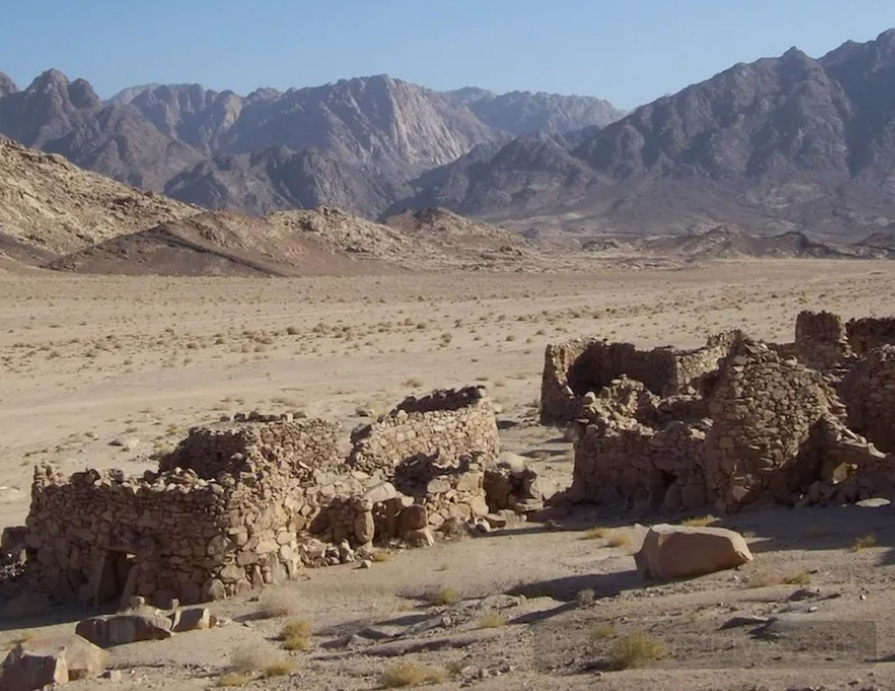
القرية النبطية
القرية النبطية قرب سانت كاترين بجنوب سيناء مستوطنة صحراوية أثرية تحفظ البقايا الحجرية لمجتمع تجاري مرتبط بالأنباط.
يقع الموقع في الداخل الجبلي لجنوب سيناء، ويُزار غالبًا عبر منطقة الكرم، ويتكون من مبانٍ حجرية منخفضة متآكلة مندمجة في الأرض الجافة. وكان الأنباط، المعروفون بشبكات تجارتهم الإقليمية المتمركزة حول البتراء، يحافظون على طرق عبر سيناء، وتعكس هذه المستوطنة تكيّفهم مع بيئة صحراوية قاسية. وعند السير بين بقاياها يشعر المرء بحجم الزمن أكثر من حجم العمارة.
يمكن الوصول بسيارة دفع رباعي
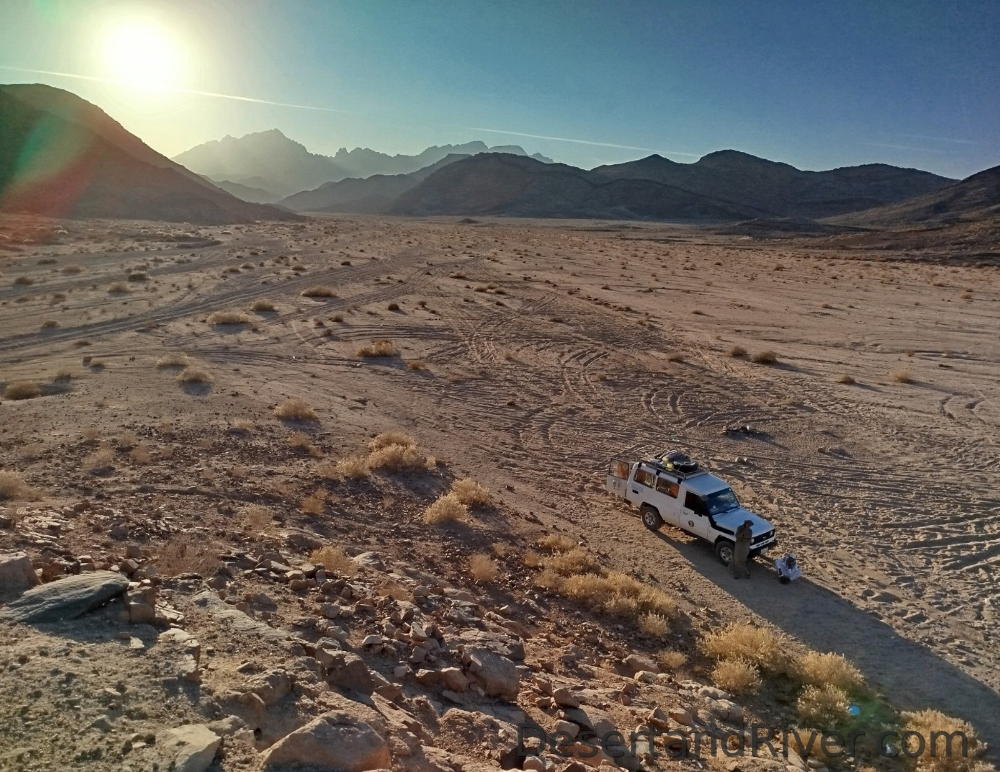
وادي إسلاف
وادي إسلاف وادٍ صحراوي ذو أهمية تاريخية في محافظة جنوب سيناء، يشكّل ممرًا رئيسيًا عبر الأرض الجبلية نحو منطقة سانت كاترين.
يقع الوادي بين تكوينات مرتفعة من عصر ما قبل الكمبري من الميجماتيت والنيس والأمفيبوليت، وكان طويلًا طريقًا يربط وادي فيران بوادي الشيخ، وقد أُنشئ فيه درب للسيارات في عشرينيات القرن العشرين. وتشهد البقايا الأثرية، ومنها النواميس من عصور ما قبل التاريخ وآثار تعدين النحاس المبكر في مناطق قريبة مثل وادي النصب، على وجود بشري متواصل؛ ويثير حجم الوادي وواجهاته الصخرية الداكنة بالمعادن وعيًا هادئًا بالزمن الجيولوجي والتاريخي.
يمكن الوصول بسيارة دفع رباعي
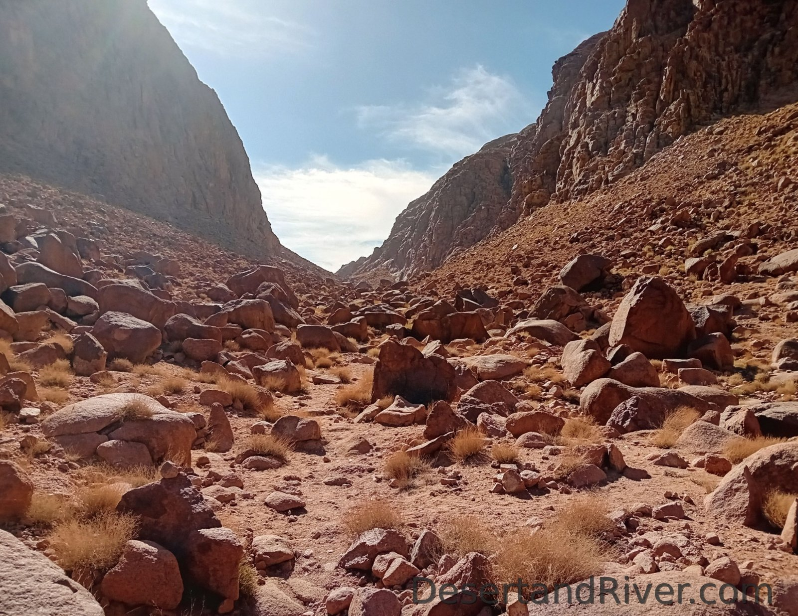
وادي إسلا
وادي إسلا وادٍ صحراوي جبلي في محافظة جنوب سيناء قرب الطور وسانت كاترين، يتميز بتكويناته الغرانيتية وأرضه الجافة الوعرة.
يقع وادي إسلا بين الطور وسانت كاترين، وهو جزء من المنظومة الجبلية الغرانيتية التي تحدد داخل جنوب سيناء. وتكشف ممراته الضيقة وواجهاته الصخرية المتآكلة عمليات جيولوجية امتدت آلاف السنين، بينما يدعو الحجم الهادئ للمكان إلى وعي بزمن لا يُقاس بالساعات بل بالحجر.
تتراوح مسارات المشي المعتادة في الوادي بين ساعتين وأربع ساعات حسب الإيقاع ونقطة الدخول.
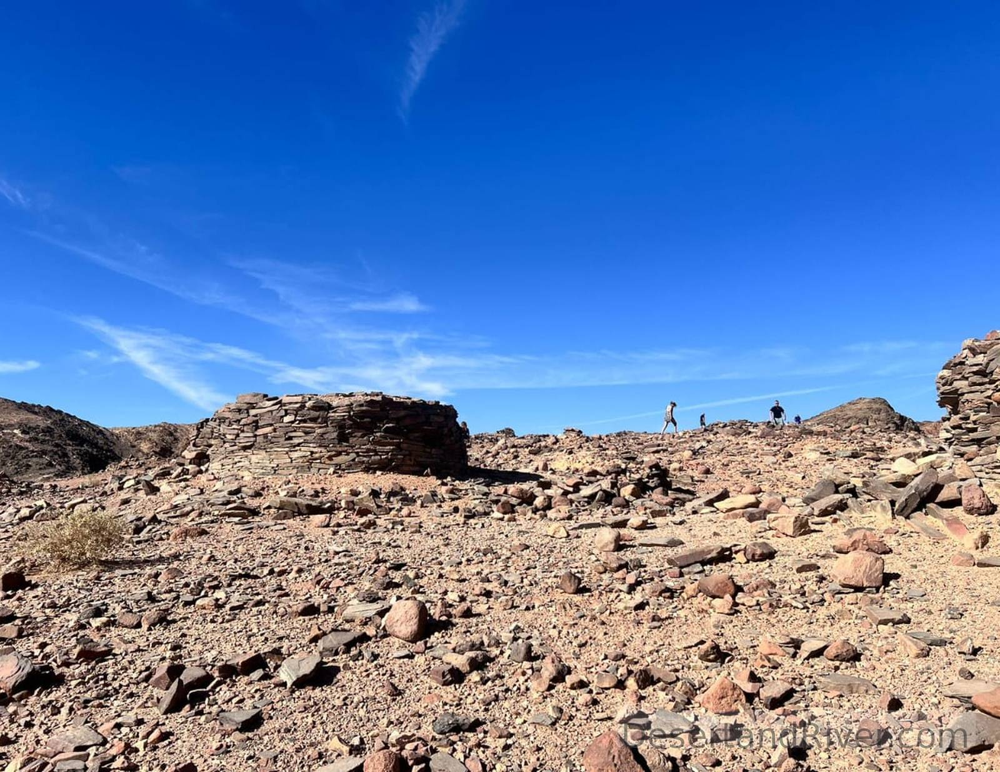
وادي حبران
وادي حبران وادٍ صحراوي واسع في جنوب سيناء، يشتهر بطرق البدو التقليدية ومبانٍ حجرية مميزة من عصور ما قبل التاريخ تُسمى النواميس على ضفافه.
كان وادي حبران تاريخيًا ممرًا للعبور والرعي يربط التجمعات الجبلية بساحل البحر الأحمر. ويقع ناموسان على ضفتيه تضيئهما أشعة الشمس الغاربة، في توافق دقيق ربما رمز إلى نهاية الحياة، ما يدعو إلى التأمل في التفاعل بين الطقوس البشرية والزمن والمشهد الصحراوي الواسع.
يمكن الوصول بسيارة دفع رباعي؛ يستغرق عبور الجزء الأوسط عادةً ساعتين إلى ثلاث حسب الطريق والظروف.

وادي المكتّب
وادي المكتّب في جنوب سيناء وادٍ جاف يشتهر بمجموعته الواسعة من النقوش القديمة المحفورة على واجهات الصخور.
يحفظ الموقع سجلًا لافتًا من النقوش الصخرية النبطية وما قبل النبطية، منها زخارف هندسية وكتابات مبكرة، تعكس شبكات التجارة والثقافة التاريخية في المنطقة. وعند السير بين الحجارة المتآكلة يشعر المرء بمرور الزمن البطيء وبالسكون الدائم لهذا المشهد الصحراوي.
يمكن الوصول بمشي متوسط لمدة ساعة إلى ساعتين

وادي السيح
وادي السيح وادٍ صحراوي منعزل في جنوب سيناء، تميّزه التكوينات الصخرية الوعرة ومجاري المياه المتقطعة وآثار نشاط بشري قديم.
يمتد هذا الوادي عبر المشهد الجاف، ويقدم لمحة عن التاريخ الجيولوجي لسيناء ونباتاتها القليلة الصامدة. وعند السير في أرضه يشعر المرء بالسكون وبحجم الزمن، حيث لا يقطع الصمت إلا همس الريح فوق الحجارة.
يمكن الوصول بسيارة دفع رباعي؛ يتطلب مشيًا متوسطًا
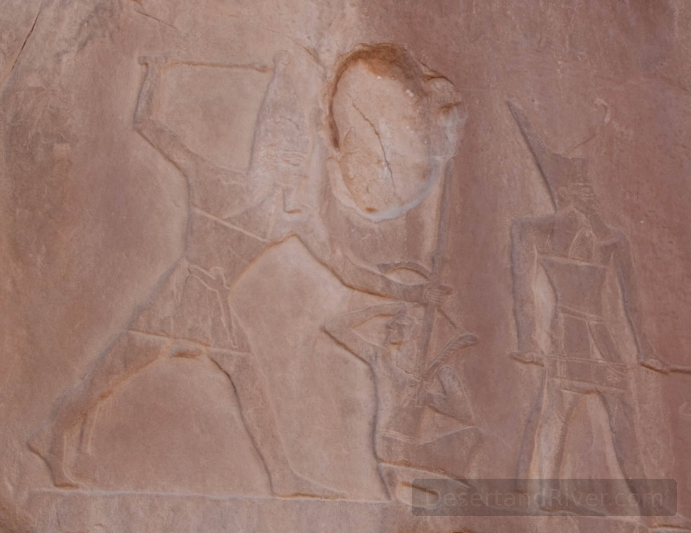
وادي المغارة
وادي المغارة وادٍ جاف في جنوب سيناء، يشتهر بكهوفه من عصور ما قبل التاريخ ونقوشه القديمة وبعض من أقدم مناجم الفيروز المصرية المعروفة، التي تعود إلى عهد الملك السابع من الأسرة الأولى.
في الوادي نقوش يزيد عمرها على 4700 عام، تصوّر أشخاصًا متساوين في الطول يمسكون بيد طفل، وهو تمثيل نادر للمساواة في الفن المصري القديم. ومع بقايا الدفن والنقوش الصخرية، تمنح امتداداته الصحراوية الهادئة إحساسًا عميقًا بالاستمرارية والصلة الإنسانية عبر آلاف السنين.
يمكن الوصول بسيارة دفع رباعي
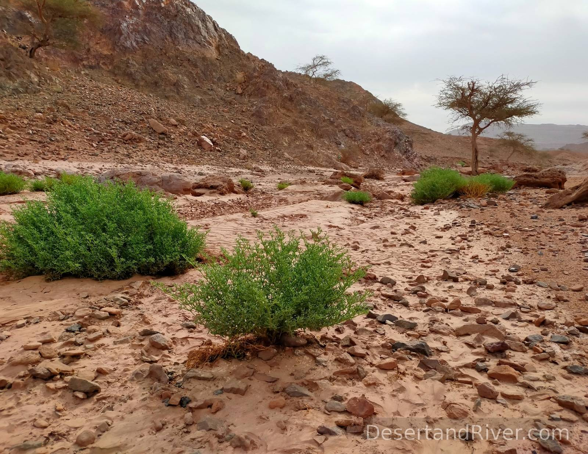
وادي بابا
وادي بابا حوض تصريف واسع وجاف في جنوب غرب سيناء، يوجّه المياه إلى خليج السويس ويضم أرضًا غرانيتية وعرة ذات تاريخ متعدد الطبقات.
في الوادي آثار نشاط بشري تمتد عبر العصور الفرعونية والنبطية والمسيحية والإسلامية، منها أطلال ونقوش متناثرة. ووسط مشهده العاري، يمنح تلاعب الضوء على الحواف الغرانيتية سكونًا خالدًا، وإحساسًا خفيًا بالصلة بتاريخ المنطقة الدائم.
يمكن الوصول بسيارة دفع رباعي؛ السيول شائعة عند الأمطار النادرة.
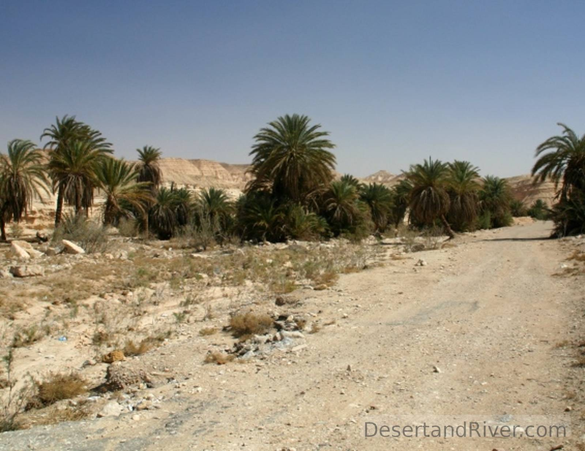
وادي غرندل
وادي غرندل وادٍ صحراوي واسع في غرب جنوب سيناء، يشتهر بينابيع المياه العذبة الموسمية وتجمعات النخيل وسط مشهد جاف.
يقع الوادي على السهل الساحلي بين خليج السويس وداخل سيناء، وهو جزء من منظومة طرق قديمة تربط مصر ببلاد الشام. وعلى خلاف كثير من الوديان الجافة في المنطقة، يجري فيه الماء أحيانًا وتنمو فيه نباتات خفيفة، فيصنع تباينًا لافتًا بين الحجر والرمل والخضرة: تذكيرًا هادئًا بالصمود وسط القحط الظاهر.
يمكن الوصول بسيارة دفع رباعي
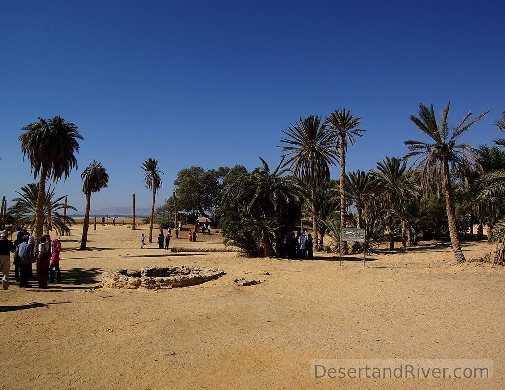
عيون موسى
عيون موسى مجموعة من ينابيع المياه العذبة في جنوب سيناء قرب خليج السويس، ارتبطت تاريخيًا بقصة موسى في التوراة والقرآن، واستُخدمت لاحقًا موقعًا عسكريًا خلال الاحتلال الإسرائيلي لشبه الجزيرة.
تقع الينابيع في سهل صحراوي قليل النباتات، وتمنح بركها المتواضعة وبساتين النخيل تباينًا هادئًا مع المشهد الجاف المحيط. وفي منتصف القرن العشرين أدى موقعها الاستراتيجي إلى استخدامها من القوات الإسرائيلية حصنًا خلال احتلال سيناء (1967–1982)، وما زالت بقاياه، مثل السواتر الترابية والمواقع الدفاعية، ظاهرة إلى جانب نصب تذكارية للعمليات العسكرية المصرية اللاحقة.
تقع على بعد نحو 25–30 كم جنوب نفق أحمد حمدي، ويمكن الوصول إليها بالطريق.
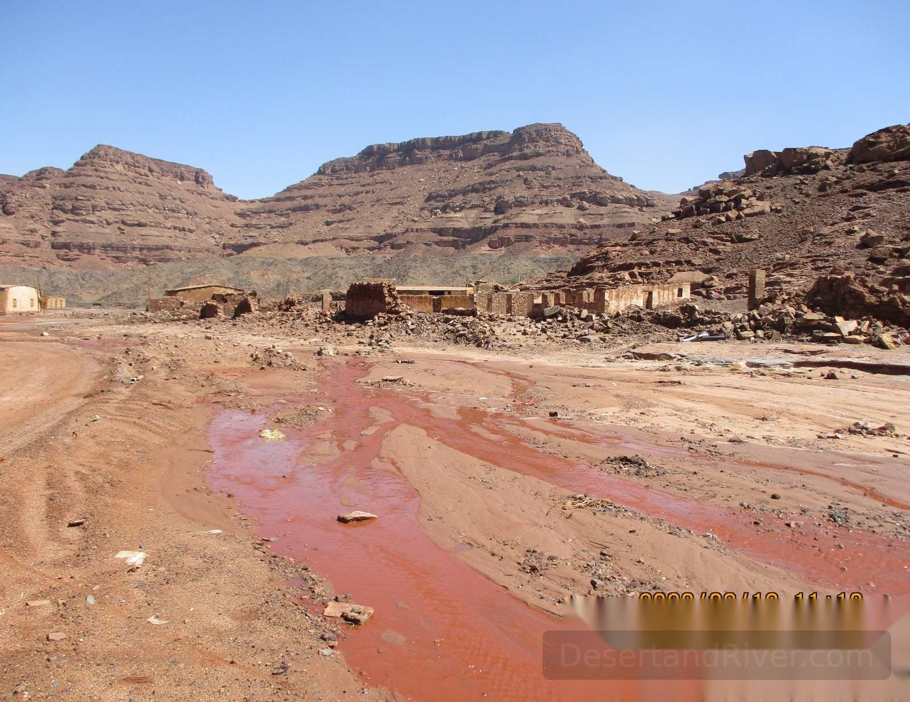
وادي النصب
وادي النصب وادٍ جاف في جنوب سيناء، يشتهر ببقايا أثرية واسعة لصهر النحاس القديم ونشاط صناعي مرتبط به في المشهد الصحراوي الوعر لشبه الجزيرة.
يقع وادي النصب على ارتفاع نحو 355 مترًا فوق سطح البحر في جنوب غرب سيناء، وكان مركزًا لمعالجة المعادن من الدولة القديمة حتى عصور لاحقة، حيث كان خام النحاس يتحول إلى معدن في مجمع من الأفران والمساحات الإدارية ونقاط المراقبة. ويعكس حجم الخبث وبقايا المباني إنتاجًا متواصلًا والأثر الباقي للجهد البشري على هذه الأرض العارية التي لفحتها الشمس.
الارتفاع: نحو 355 مترًا فوق سطح البحر، مع طبقات أثرية تعكس نشاطًا معدنيًا قديمًا ونبطيًا طويلًا.

بئر النصب
بئر النصب بئر ماء في الداخل الوعر لمحافظة جنوب سيناء، وسط الامتداد الجاف لمرتفعات شبه الجزيرة الصحراوية.
تقع بئر النصب على ارتفاع نحو 917 مترًا فوق سطح البحر، وهي مصدر تقليدي للمياه الجوفية في مشهد جاف تمنح فيه الرياح الموسمية والنهار الطويل إحساسًا ملموسًا بالاتساع. ويعكس وجودها آلاف السنين من تكيّف الإنسان مع مناخ سيناء، وكانت تاريخيًا علامة على طرق الرحّل وبعثات التعدين العرضية في وادي النصب القريب.
الارتفاع نحو 917 مترًا فوق سطح البحر؛ في جنوب سيناء، مصر.
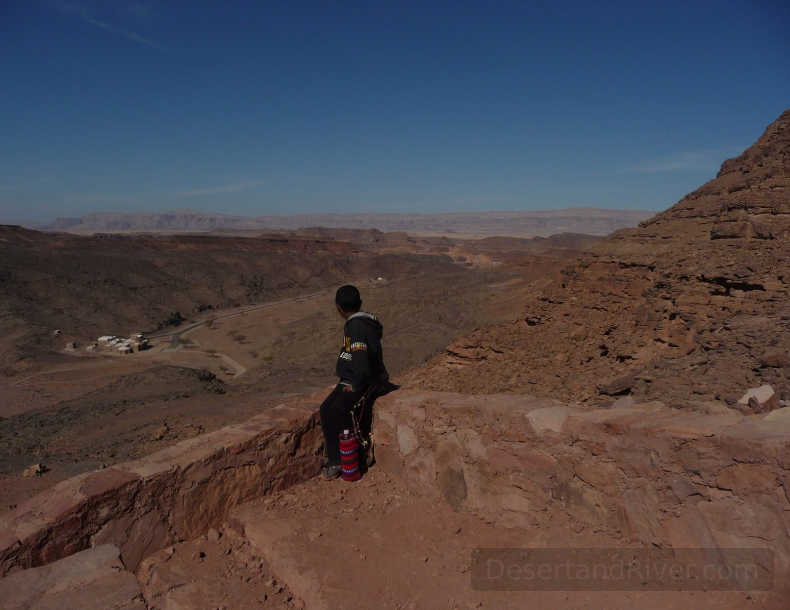
رود العير
رود العير وادٍ صحراوي في شبه جزيرة سيناء، يقع على الطريق إلى معبد سرابيط الخادم، وفيه نقوش قديمة وآثار للحياة البرية في العصر الفرعوني.
في الوادي نقوش صخرية لقوارب وزرافات وحيوانات أخرى من العصر الفرعوني، منها ما يُعد أقدم رمز يشبه «الهاشتاغ» في المنطقة. والسير بين هذه النقوش يثير صلة هادئة بمن عبروا هذا المشهد قبل آلاف السنين، وبالنظام البيئي الذي عاشوا فيه واختفى الآن.
يمكن الوصول بسيارة دفع رباعي؛ في الطريق إلى معبد سرابيط الخادم

سرابيط الخادم
سرابيط الخادم في جنوب غرب سيناء موقع أثري قديم لتعدين الفيروز والنحاس على نطاق واسع، فيه بقايا معبد لحتحور ونقوش أبجدية مبكرة.
عمل المصريون القدماء وعمال من الشرق الأدنى في هذا الموقع على قمة الهضبة منذ الدولة الوسطى على الأقل، وفيه معبد مكرّس لحتحور، حامية الصحراء و«سيدة الفيروز». وتشهد اللوحات المتناثرة والنقوش الصخرية بالخط السينائي الأولي، المحفورة في الحجر الذي بيّضته الشمس، على صلة بشرية طويلة بهذا المشهد المرتفع العاصف، حيث نُقشت اللغة والعقيدة في الحجر حرفيًا.
يقع على بعد نحو 43 كم شرق أبو زنيمة، على هضبة ترتفع نحو 850 مترًا فوق سطح البحر.

مغارة الطليحة
مغارة الطليحة كهف من الحجر الجيري في جنوب سيناء، يشتهر بنقوش من عصور ما قبل التاريخ بالخط السينائي الأولي والهيروغليفية المصرية، قرب مناجم فيروز قديمة.
يضم الكهف أقدم الأمثلة المعروفة على الأبجدية السينائية الأولية إلى جانب نقوش هيروغليفية، وهو مزيج وثّقه أولًا عالم الآثار فلندرز بتري. ويثير داخله إحساسًا خافتًا بتوقف الزمن، حيث تعكس الكتابة المبكرة ومناجم الفيروز القريبة إبداع الشعوب القديمة وكدّها في مشهد سيناء الواسع.
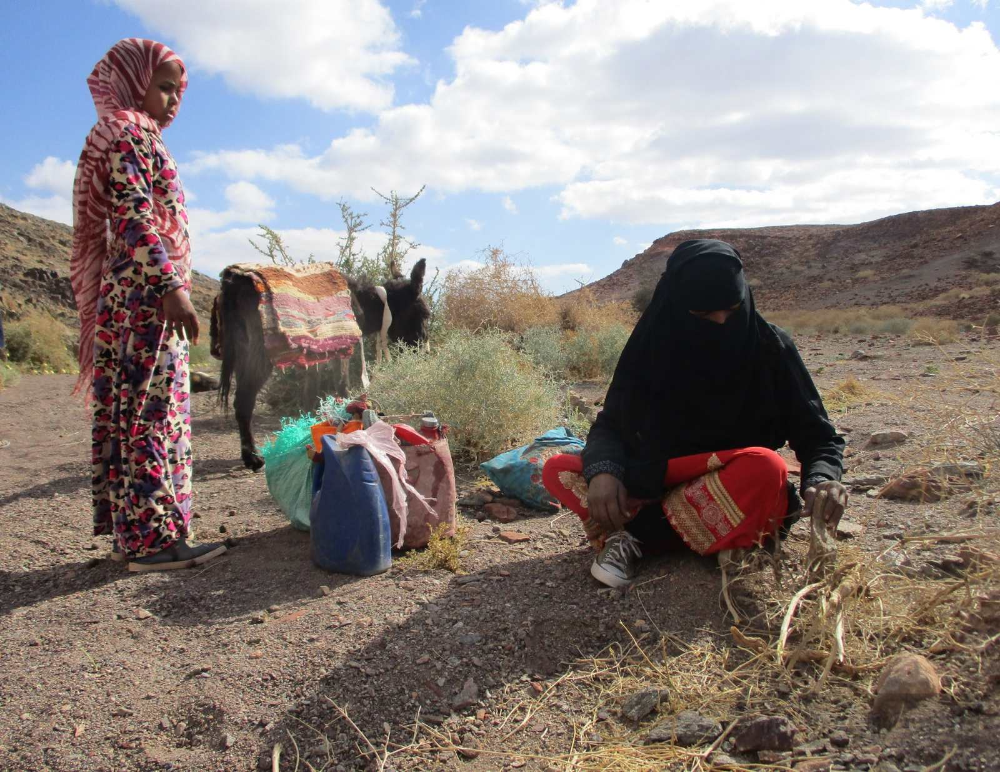
أم ياسر
أم ياسر امرأة بدوية رائدة من قبيلة الحماضة، وأول مرشدة رئيسية على درب سيناء، تقود رحلات تستكشف مناظر جنوب سيناء وثقافته.
منذ 2019 تقود أم ياسر الرحلات على درب سيناء الذي يغلب عليه الرجال تقليديًا، ومعظم من ترشدهم من النساء، وتشاركهن معرفتها بالنباتات المحلية والتاريخ وحياة البدو. ويثير حضورها إحساسًا هادئًا بالصمود والاستمرارية، إذ تصل تقاليد عمرها قرون بإمكانيات جديدة للنساء في المنطقة.
بدأت الإرشاد في 2019؛ أول مرشدة بدوية رئيسية على درب سيناء.

وادي السهو
وادي السهو وادٍ ناءٍ في جنوب سيناء، يضم قرية بدوية منعزلة ونقوشًا صخرية قديمة من العصور الفرعونية والنبطية وما قبل التاريخ.
يسكن القرية أساسًا أبناء قبيلة الحماضة، وتمنح الزوار لمحة عن الحياة البدوية التقليدية والضيافة، ومن أبرز من يجسّدها أم ياسر، أول مرشدة في سيناء. ووسط المشهد الصحراوي الهادئ، تثير الحجارة المنقوشة والدروب المطروقة إحساسًا عميقًا بالتاريخ والوجود البشري الدائم.
فيه نقوش صخرية ظاهرة من عصور تاريخية متعددة وبيوت بدوية تقليدية ما زالت مأهولة.
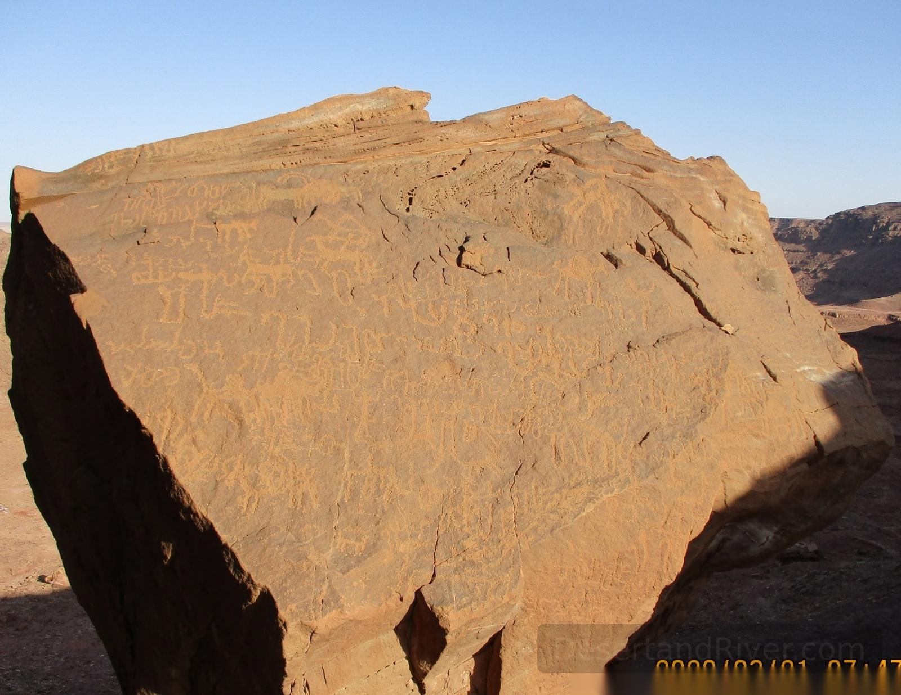
وادي اللحيان
وادي اللحيان وادٍ صحراوي في جنوب سيناء، يشتهر بنقوشه الصخرية القديمة ورواسبه المعدنية ودروب البدو التاريخية.
في الوادي نقوش صخرية وآثار تعدين مبكر، تعكس وجودًا بشريًا عبر آلاف السنين. وتمنح أرضه العارية المفتوحة إحساسًا عميقًا بالسكون، حيث يجعل اتساع الصحراء الزمن يبدو متوقفًا.
يتراوح الارتفاع بين 400 و600 متر فوق سطح البحر؛ يمكن الوصول عبر دروب الدفع الرباعي.

جبل أم بجمة
هضبة غرانيتية واسعة مرتفعة ومستوطنة تعدين سابقة في جنوب سيناء، على أرض صحراوية وعرة في شبه جزيرة سيناء.
يشير اسم أم بجمة إلى الهضبة وإلى أعمال تعدين المنجنيز المهجورة من أوائل القرن العشرين، التي أُنشئت في عهد الإدارة البريطانية ثم أدارتها السلطات المصرية حتى إغلاقها في منتصف القرن العشرين. ويقع المكان بين أخاديد غرانيتية عميقة ووديان جافة يعبرها البدو منذ قرون؛ وكثيرًا ما يلاحظ السائرون على الدروب الصحراوية الطويلة سكونًا عاريًا وهندسة خافتة للضوء والحجر عند الفجر.
يمكن الوصول بسيارة دفع رباعي
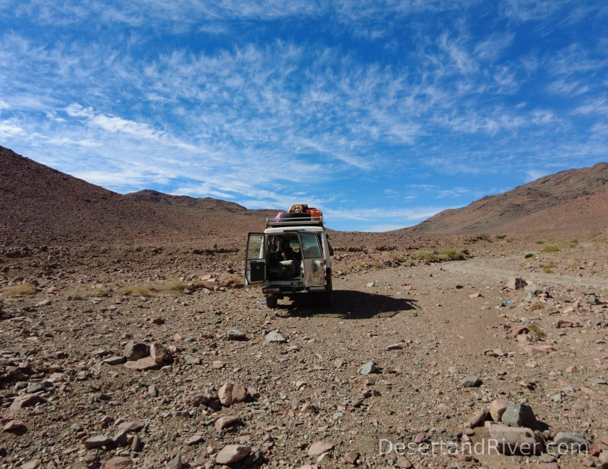
وادي برق
وادي برق وادٍ في وسط سيناء يشتهر بتكويناته الصخرية اللافتة وتنوع أنواع الحجارة، ويشكّل ممرًا خلابًا على الطريق الصحراوي.
عند عبور وادي برق بالسيارة، تتكشف ألوان الصخور وملامسها الطبقية تدريجيًا، فتُظهر التنوع الجيولوجي والحضور الهادئ الدائم للمشهد الصحراوي. وتصنع حجارة الوادي، من الحجر الرملي الأحمر إلى الحجر الجيري الفاتح، إيقاعًا خفيًا يحدد مرور الزمن.
يمكن الوصول بسيارة دفع رباعي
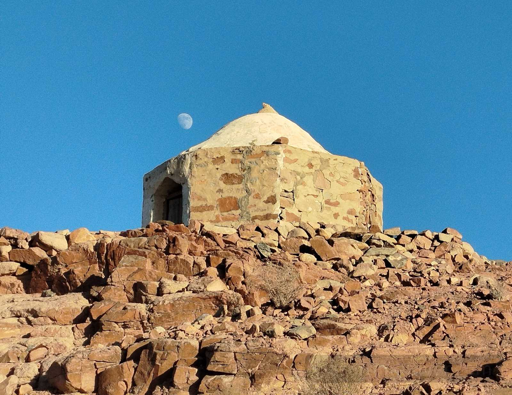
الشيخ أبو طالب
علامة جغرافية وموقع بدوي محلي في وسط سيناء، يحدد مدفن شيخ بدوي على تل متواضع بين الوديان الصحراوية قرب طرق القوافل التقليدية.
يقع الموقع في المشهد الواسع الجاف لوسط سيناء على امتداد وادي إسلاف، ويُعرف محليًا بضريح شخصية بدوية محترمة، الشيخ أبو طالب، على ارتفاع صغير في أرض الوادي. ويصف المسافرون وسكان الصحراء سكونًا ملموسًا في هذا المكان حيث يلتقي الرمل والحجر والسماء الواسعة، ويثير الحضور الهادئ للضريح مرور الزمن البطيء في هذه المنطقة قليلة السكان.
يقع في الأرض الصحراوية لوسط سيناء قرب وادي إسلاف، وهو علامة على الطرق التقليدية عبر شبه الجزيرة.

وادي سحاب
وادي سحاب وادٍ جاف في جنوب سيناء، يحدده مجرى سيل متقطع محفور في جبال جافة شرق مرتفعات وسط سيناء، وهو نموذج لنظام التصريف الصحراوي في شبه الجزيرة.
يقع وادي سحاب وسط الأرض الوعرة لجنوب سيناء، وهو جزء من شبكة أوسع من المجاري الموسمية التي تتخلل المرتفعات الجيرية والغرانيتية في شبه الجزيرة. وينمو في الوادي قدر مدهش من النباتات، منها تجمعات من أشجار السنط، تصنع تباينًا هادئًا مع المشهد الجاف المحيط وتدعو إلى إحساس تأملي بالسكون والزمن.
الارتفاع نحو 879 مترًا؛ في الوادي بقع كثيفة من النباتات وأشجار السنط.
وادي برّاح
وادي برّاح وادٍ منعزل في جنوب سيناء، فيه تكوينات صخرية لافتة ونقوش قديمة وآثار نشاط بشري تاريخي.
في وادي برّاح يقع حجر اللغة، «الحجر المتكلم»، الذي يضخّم صداه الطبيعي الأصوات عبر الوادي. ويحفظ الموقع نقوشًا نبطية وقبطية ويونانية وعربية، في سجل متعدد الطبقات للوجود البشري الطويل والمتنوع في سيناء، حيث يدعو سكون الصحراء إلى تأمل هادئ.
يمكن الوصول إلى حجر اللغة بمشي قصير من المسار الرئيسي للوادي.

وادي خميلة
وادٍ ضيق في جنوب سيناء يشتهر بالفن الصخري والنقوش القديمة، التي تعكس حضورًا مصريًا ونبطيًا مبكرًا ونشاط تعدين تاريخيًا في المنطقة.
في وادي خميلة لوحة صخرية عمرها 5000 عام تُظهر شخصًا مصريًا يسيطر على أحد السكان المحليين، مرتبطة باستخراج النحاس وبالإله مين بوصفه «سيد خام النحاس». ثم أضيفت نقوش نبطية لاحقًا، ما يقدم لمحة متعددة الطبقات عن تاريخ سيناء البشري الطويل. ويثير سكون الوادي إحساسًا بزمن يمتد عبر آلاف السنين.
يمكن الوصول بسيارة دفع رباعي ثم مشي قصير
هضبة أم عراك
هضبة أم عراك أرض مرتفعة من الحجر الرملي في جنوب سيناء، فيها ملجأ صخري وُثّق حديثًا يحمل فنًا بشريًا ونقوشًا متعددة الطبقات تسجّل آلاف السنين من السكن.
يقع الملجأ الرملي الطبيعي على الهضبة على بعد نحو 5 كم شمال شرق مجمع التعدين والمعبد القديم في سرابيط الخادم، ويمتد أكثر من 100 متر، ويضم رسومًا ونقوشًا تمتد من أواخر عصور ما قبل التاريخ حتى العصور التاريخية. وتُظهر أسطحه تقنيات وأيقونات مختلفة، مثل الحيوانات ومشاهد الصيد والفرسان والنقوش، تستحضر الحضور الدائم لمن سكنوا هذا المشهد القاسي وعبروه.
طول الملجأ نحو 100 متر، بطبقات من الفن الصخري من نحو 10000 قبل الميلاد حتى العصر الإسلامي المبكر.
وادي خريج
وادي خريج وادٍ داخلي في جنوب سيناء، يشتهر ببقايا تعدين النحاس والتعدين القديمة، وبنقوش منها اسم الملك ساحورع من الأسرة الخامسة (نحو 2428 قبل الميلاد).
يقع الوادي على بعد نحو 30 دقيقة من منطقة سرابيط الخادم، وهو جزء من منظومة أوسع من مناظر التعدين في عصور ما قبل التاريخ والعصر البرونزي في جنوب سيناء، حيث تشهد البواتق وبقايا الصهر على نشاط معدني مبكر. ومن بين النقوش الصخرية خرطوش يحمل اسم الملك ساحورع، يربط المشهد الصحراوي القاسي بالأسرة الخامسة في مصر؛ وينقل سكون الوادي الجهد البشري الدائم المحفور في الحجارة.
يقع على بعد نحو 30 دقيقة من سرابيط الخادم، في منطقة التعدين بوسط سيناء.
جبل حسبار
جبل حسبار تل صغير من الحجر الرملي قرب سرابيط الخادم، يشتهر بنقوش مبكرة منها كتابات هيروغليفية بخرطوش الملك منكاورع (الأسرة الرابعة، نحو 2510 قبل الميلاد).
تجمع النقوش في جبل حسبار بين علامات رمزية ونص هيروغليفي، وتربط الموقع بالبعثات الفرعونية في سيناء. وبين المنحدرات المغرية تثير النقوش إحساسًا بتاريخ عميق وبإصرار الوجود البشري الهادئ عبر آلاف السنين.
اكتُشف عام 2012؛ يمكن الوصول بسيارة دفع رباعي وصعود قصير.

وادي العميرية
وادي العميرية وادٍ صحراوي في جنوب سيناء، يشتهر بنقوش قديمة اكتُشفت حديثًا تصوّر حورس نارمر، أول ملوك الأسرة الأولى في مصر.
كشف تاليه ولايسني هذه النقوش عام 2012، وهي تُظهر أيقونات فرعونية مبكرة نادرًا ما حُفظت في مشهد سيناء الجاف. ويمنح امتداد الوادي الهادئ ورماله المتحركة إحساسًا خفيًا بعمق الزمن، حيث يبدو الوجود البشري عابرًا وعظيمًا في آن أمام الصحراء الدائمة.
يقع في جنوب سيناء؛ يمكن الوصول عبر درب وعر بسيارة دفع رباعي
وادي حمر
وادي حمر وادٍ ناءٍ في جنوب سيناء، يحفظ نقوشًا صخرية على طريق التجارة النبطي، تصوّر مشاهد تاريخية من الحرب إلى حياة البدو.
في الموقع صخرة بارزة محفور عليها تصوير مفصل لمعركة ولعرس بدوي قديم، ما يقدم لمحة نادرة عن التاريخ الاجتماعي والعسكري للمنطقة. والوقوف بجوار هذه النقوش يمنح إحساسًا بسكون الصحراء وبثقل القرون المحفوظة في الحجر.
يقع على طريق التجارة النبطي، ويمكن الوصول إليه بسيارة دفع رباعي

وادي الكيد
وادي الكيد وادٍ صحراوي طبيعي في جنوب شبه جزيرة سيناء، يشق أرضًا متحولة وعرة وسط المشهد الجاف قرب دهب والمرتفعات المحيطة.
هذا الوادي جزء من الشبكة الأوسع لمجاري الأنهار الجافة الموسمية التي تشكّل تضاريس سيناء، ويتكوّن من جدران صخرية شديدة الانحدار وسهول طميية وينابيع متفرقة دعمت سكن البدو وبقعًا صغيرة من النباتات الصحراوية. وجيولوجيًا يعبر صخورًا قديمة من عصر ما قبل الكمبري تابعة للدرع العربي النوبي، وفي امتداداته الأهدأ سكون ملموس حيث يتحرك الضوء والظل على الغرانيت والنيس، مستحضرًا مرور الزمن البطيء في هذه المنطقة قليلة السكان.
يمكن الوصول بسيارة دفع رباعي ومشي قصير

غابة الأعمدة
غابة الأعمدة تكوين جيولوجي ناءٍ من أعمدة صخرية أنبوبية قائمة طبيعيًا على السهل الرملي أسفل هضبة التيه في جنوب سيناء.
يقع الموقع قرب جبل الفقة، ويُوصل إليه عبر دروب وعرة داخل البر من سرابيط الخادم، ويتكوّن من تجمعات أعمدة غنية بأكسيد الحديد تعكس أشكالها عملية نادرة لترسب المعادن في الحجر الرملي الصحراوي. وتتباين هذه التكوينات بشدة مع السهول الواسعة التي نحتتها الرياح حولها، وتمنح إحساسًا هادئًا بالزمن الجيولوجي، حيث يُحسّ السكون والحجم في الظلال الطويلة على أرض الصحراء.
لا يمكن الوصول إلا بسيارة دفع رباعي

وادي زلقة
وادي زلقة وادٍ صحراوي واسع في جنوب سيناء، يشتهر باستضافة سباقات الهجن البدوية التقليدية التي تحفظ التراث الثقافي للقبائل.
يمتد وادي زلقة عبر مشهد هادئ مفتوح، تلتقي فيه قبيلتا الترابين والمزينة سنويًا في سباقات تحمّل لمسافة 28–30 كم. ويعكس امتداد الوادي الجاف قسوة صحراء سيناء وهدوءها معًا، ويمنح إحساسًا باستمرارية خالدة في إيقاع الحياة المحلية.
يمكن الوصول بسيارة دفع رباعي
وادي خرابة
وادي خرابة وادٍ جاف في شبه جزيرة سيناء، جزء من شبكة معقدة من مجاري الأنهار الجافة التي تحمل المياه أحيانًا عند الأمطار النادرة وتشكّل المشهد الصحراوي الوعر.
وادي خرابة نموذج للمجاري الحجرية شديدة الانحدار في شبه الجزيرة الجافة، حفرتها السيول المتقطعة وتعرية الرياح على مدى آلاف السنين. وتشهد ملامحه ورواسبه بصمت على الزمن الجيولوجي العميق والتباينات المناخية، وتثير إحساسًا بقوى قديمة تعمل في صمت.
لا يمكن الوصول إلا بسيارات الدفع الرباعي؛ الأرض وعرة جدًا وصعبة.
كيف نختار ما يتناسب معًا
نحن لا «نجمع» الأماكن. نصمم مسارات تراعي المسافة والحرارة والتضاريس والتصاريح وجاهزية الضيوف. وغالبًا ما تكون أكثر الرحلات رسوخًا في الذاكرة تلك التي فيها محطات أقل ووقت أكثر.
الخطوة التالية
اختر 5–10 أماكن تهمك حقًا. ثم احجز مكالمة وسنقترح عليك مسارًا مسؤولًا.
احجز مكالمة مدتها 30 دقيقة اقرأ كيف تعمل الرحلات حسب الطلب